과학 정리노트자극과 반응 · 생식과 유전
개념 정리 4단계로 기초부터 고난도까지 올라갑니다.
문제 구성: 하이탑(학습 Check · 탐구 확인 · 개념 확인 · 실력 강화 · 서술형 · 최상위 · 실전) + 교과서(탐구 · 해 보기 · 스스로 확인 · 스스로 정리 · 최종 점검) 전 문항, 이어서 조건을 바꾼 변형 문제 52개. 각 단원 끝에 정답과 해설.
목차
- Ⅳ-1 감각 기관 — 개념 정리 기본·응용·발전·심화
- Ⅳ-1 감각 기관 — 문제 정리 하이탑 · 교과서 · 정답
- Ⅴ-1 생장과 생식 — 개념 정리
- Ⅴ-1 생장과 생식 — 문제 정리
- Ⅴ-2 유전의 원리 — 개념 정리
- Ⅴ-2 유전의 원리 — 문제 정리
- 변형 문제 52 응용 · 발전 · 심화
- 부록 1장 요약 · 비교표 · 서술형 템플릿 · 공식 · 계획표
범위: 자극과 반응 중 소단원 1(감각 기관), 생식과 유전 중 소단원 1(생장과 생식)·2(유전의 원리). 사람의 유전(가계도)은 범위에서 제외했습니다.
그림 출처: 하이탑 중학 과학 3, 중학교 과학 3 교과서 — 개인 학습용 정리.
감각 기관
자극을 받아들이는 눈·귀·코·혀·피부의 구조와 기능
개념 정리 기본 → 응용 → 발전 → 심화
감각 기관의 구조와 기능 — 이름·기능·경로 외우기
감각 기관: 환경 변화(자극)를 받아들이는 기관. 모든 감각은 공통 경로를 거친다.
| 감각 기관 | 받아들이는 자극 | 감각 세포 / 감각점 | 감각 신경 | 감각 |
|---|---|---|---|---|
| 눈 | 빛 | 시각 세포 (망막) | 시각 신경 | 시각 |
| 귀 | 소리 (공기의 진동) | 청각 세포 (달팽이관) | 청각 신경 | 청각 |
| 몸의 기울어짐·회전 | 감각 세포 (전정 기관·반고리관) | 평형 감각 신경 | 평형 감각 | |
| 코 | 기체 상태의 화학 물질 | 후각 세포 (후각 상피) | 후각 신경 | 후각 |
| 혀 | 액체 상태의 화학 물질 | 맛세포 (맛봉오리) | 미각 신경 | 미각 |
| 피부 | 접촉, 압력, 온도 변화, 통증 | 감각점 (촉점·압점·냉점·온점·통점) | 피부 감각 신경 | 피부 감각 |
① 눈의 구조와 기능
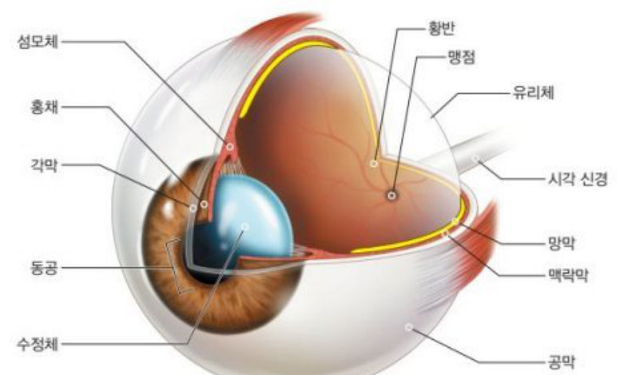
| 구조 | 기능 (시험에 나오는 한 줄) |
|---|---|
| 각막 | 눈 앞쪽의 투명한 막, 빛이 통과 |
| 홍채 | 동공의 크기를 조절 → 빛의 양 조절 |
| 동공 | 홍채 가운데 구멍, 빛이 들어가는 통로 |
| 수정체 | 볼록 렌즈 모양, 빛을 굴절시켜 망막에 상을 맺음 |
| 섬모체 | 수정체의 두께를 조절하는 근육 |
| 유리체 | 눈 속을 채우는 투명 물질, 눈의 형태 유지 |
| 망막 | 가장 안쪽 막, 시각 세포 분포, 상이 맺히는 곳 |
| 황반 | 시각 세포 밀집 → 상이 가장 뚜렷 |
| 맹점 | 시각 신경이 모여 나가는 곳, 시각 세포 없음 → 상이 맺혀도 안 보임 |
| 맥락막 | 검은색 색소 → 눈 속을 어둡게 (암실) |
| 공막 | 가장 바깥 흰색 막 (흰자위), 눈 보호·형태 유지 |
| 시각 신경 | 시각 세포가 받은 자극을 뇌로 전달 |
② 귀의 구조와 기능
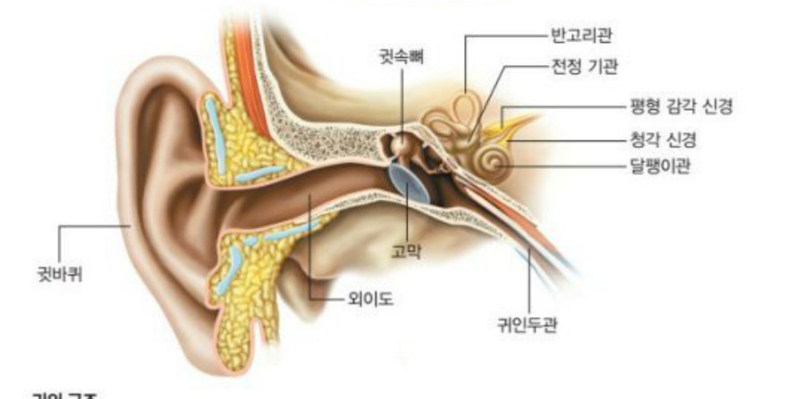
| 구조 | 기능 |
|---|---|
| 귓바퀴 | 소리(음파)를 모음 |
| 외이도 | 소리가 고막까지 지나가는 통로 |
| 고막 | 얇은 막, 소리에 의해 가장 먼저 진동 |
| 귓속뼈 | 작은 뼈 3개, 고막의 진동을 증폭 |
| 달팽이관 | 청각 세포 분포 → 소리 자극 수용 |
| 전정 기관 | 몸의 기울어짐 감지 |
| 반고리관 | 몸의 회전 감지 (반원형 관 3개) |
| 귀인두관 | 귀와 목구멍 연결 → 고막 안팎 압력 조절 |
③ 코 · 혀 · 피부
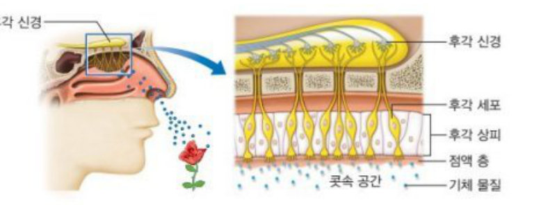
- 콧속 윗부분 후각 상피에 후각 세포
- 자극: 기체 상태의 화학 물질
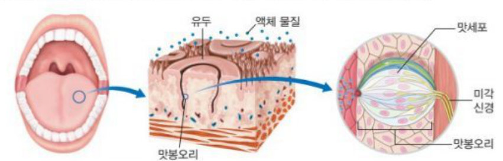
- 혀 표면 돌기 = 유두, 유두 옆면에 맛봉오리, 그 안에 맛세포
- 자극: 액체 상태의 화학 물질 · 기본 맛 5가지: 단맛, 짠맛, 신맛, 쓴맛, 감칠맛
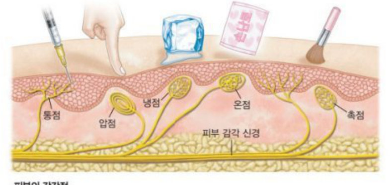
- 촉점: 가볍게 닿는 접촉 · 압점: 누르는 압력
- 냉점: 온도가 낮아지는 변화 · 온점: 온도가 높아지는 변화
- 통점: 매우 강한 자극(통증) — 분포 수 가장 많음
- 감각점은 감각 신경의 말단이 특수하게 분화된 것
조절 작용과 감각 전달 과정 — 상황에 적용하기
① 물체를 보는 과정
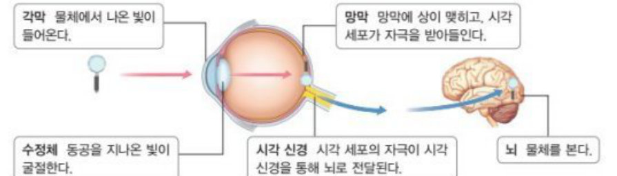
② 눈의 조절 작용 (가장 많이 출제!)
| 상황 | 홍채 | 동공 | 섬모체 | 수정체 |
|---|---|---|---|---|
| 어두운 곳 → 밝은 곳 | 확장 | 작아짐 | - | - |
| 밝은 곳 → 어두운 곳 | 축소 | 커짐 | - | - |
| 먼 곳 → 가까운 곳 | - | - | 수축 | 두꺼워짐 |
| 가까운 곳 → 먼 곳 | - | - | 이완 | 얇아짐 |
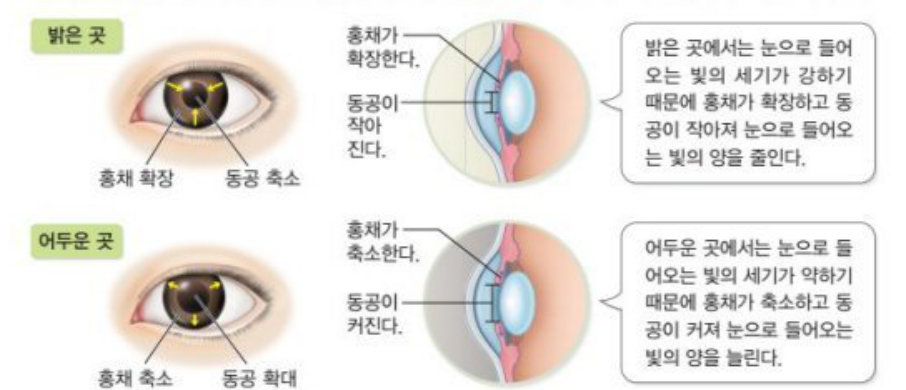
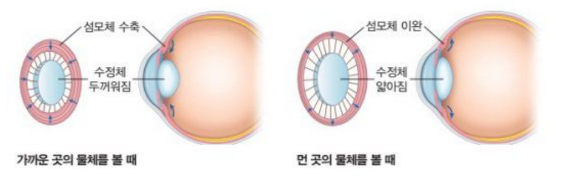
③ 소리를 듣는 과정 · 평형 감각
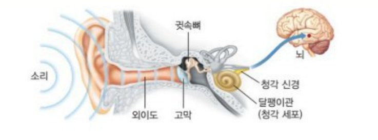
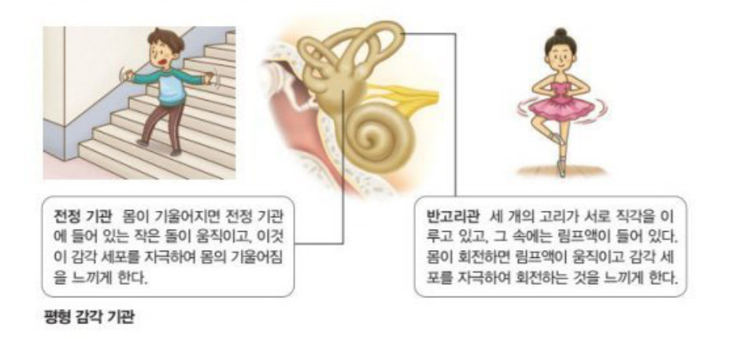
| 전정 기관 | 반고리관 | |
|---|---|---|
| 감지 | 몸의 기울어짐 (중력 자극) | 몸의 회전 |
| 예 | 엘리베이터 출발·정지, 경사진 언덕에서 몸을 앞으로 기울임, 눈 감고 한 발로 서기 | 제자리 돌기 후 어지러움, 회전의자·놀이기구, 피겨 스핀 |
④ 냄새 · 맛 · 피부 감각의 전달
- 후각: 매우 예민(아주 적은 양도 감지)하지만 쉽게 피로 → 같은 냄새를 계속 맡으면 못 느낌.
- 매운맛·떫은맛은 맛이 아니다! 매운맛 = 통점(+온점), 떫은맛 = 압점 → 피부 감각.
- 우리가 느끼는 음식 맛 = 미각 + 후각 (+ 온도·촉감) 을 뇌가 종합 → 코감기에 걸리면 맛을 잘 모름.
- 피부 부위마다 민감도가 다른 까닭: 감각점의 분포 밀도(수)가 다르기 때문 (손끝·입술 예민, 등 둔감).
탐구 결과 해석과 원리 설명 — 서술형 대비
① 탐구 해석 모음
| 탐구 | 과정 핵심 | 결과 · 결론 |
|---|---|---|
| 맹점 확인 (교과서) | 한쪽 눈을 가리고 다른 눈으로 한 그림을 계속 주시하며 거리를 바꿈 | 어느 순간 다른 그림이 안 보임 → 그 상이 맹점(시각 세포 없음)에 맺혔기 때문 |
| 빛의 밝기와 눈 (하이탑) | 손전등에 흰 종이(빛이 너무 강하지 않게) · 1분 눈 감았다 뜬 뒤 → 손전등 비춤 · 어두운 곳에서 실험 | 눈 뜬 직후: 홍채 축소·동공 확대 → 불빛 비추면: 홍채 확장·동공 축소 |
| 두 점 구별 (피부) | 이쑤시개 두 개 간격을 줄여가며 두 점으로 느끼는 최소 거리 측정 | 최소 거리가 짧을수록 촉점이 많고 예민 (손가락 끝 > 손바닥 > 이마 > 팔뚝 > 등) |
| 온도 감각 | 한 손 15℃, 다른 손 35℃ 물에 담갔다가 두 손 모두 25℃ 물로 | 15℃ 손은 따뜻, 35℃ 손은 차갑게 느낌 → 온점·냉점은 온도 변화(상대적)를 감지 |
| 미각 + 후각 | 눈을 가리고(+코를 막고) 과일 젤리/주스 맛보기 | 코를 막으면 단맛·신맛만 느끼고 과일 종류 구분 못함 → 맛은 미각과 후각의 종합 |
| 소리 vs 피부 감각 (교과서 해보기) | 진동하는 스마트 기기를 매달고 귀마개/손바닥으로 비교 | 소리는 공기(매질)를 통해 떨어져 있어도 전달, 진동 촉감은 직접 닿아야 느낌 |
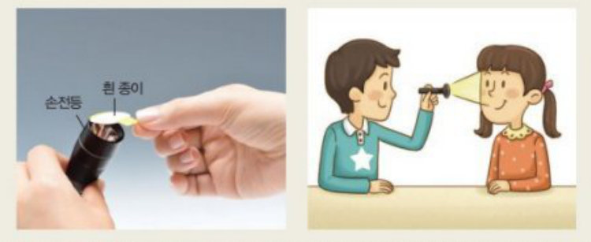
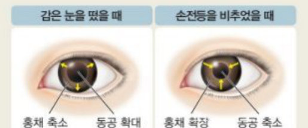
② 원리로 설명하기
- 뼈 전도 이어폰: 일반 이어폰은 공기 진동 → 고막 → 귓속뼈 → 달팽이관. 뼈 전도 이어폰은 머리뼈의 진동이 직접 달팽이관으로 전달(고막·귓속뼈를 거치지 않음) → 고막이 손상된 사람도 들을 수 있다.
- 언 아이스크림은 처음엔 단맛이 약하다 → 맛세포는 액체 상태 물질만 받아들이므로 녹아야(침에 녹아야) 맛을 느낌.
- 높은 산·비행기에서 귀가 먹먹 → 고막 안팎 압력 차이. 하품·침 삼키기 → 귀인두관이 열려 압력이 같아짐.
- 시각 신경 손상: 망막에 상이 맺혀도 뇌로 전달이 안 되어 볼 수 없다 (수정체·상의 위치 문제는 아님).
- 양쪽 눈을 뜨면 맹점을 못 느낀다: 한쪽 눈의 맹점에 맺힌 부분을 다른 눈이 보완하고, 뇌가 주변 정보로 채움.
시력 이상 · 그래프 · 반고리관 — 고난도 대비
① 시력 이상과 교정
| 종류 | 원인 | 증상 (상의 위치) | 교정 |
|---|---|---|---|
| 근시 | 수정체가 두꺼움 / 수정체~망막 거리가 멂 | 먼 곳의 상이 망막 앞 → 먼 곳이 흐림 | 오목 렌즈 (빛을 퍼지게) |
| 원시 | 수정체가 얇음 / 수정체~망막 거리가 짧음 | 가까운 곳의 상이 망막 뒤 → 가까운 곳이 흐림 | 볼록 렌즈 (빛을 모이게) |
| 난시 | 각막 표면이 고르지 않음 | 빛이 한 점에 모이지 않아 흐림 | 특수(원기둥) 렌즈 |
| 노안 | 나이가 들어 수정체 탄력 감소 | 가까운 곳에 초점 맞추기 어려움 | 볼록 렌즈 |
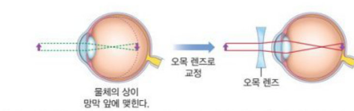
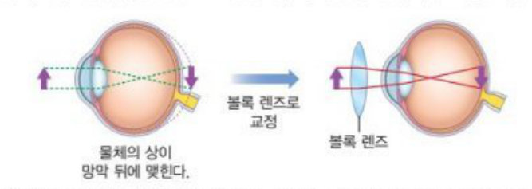
② 수정체 두께 그래프 읽기
- 그래프가 올라감 = 수정체 두꺼워짐 = 섬모체 수축 = 물체가 가까워짐
- 그래프가 내려감 = 수정체 얇아짐 = 섬모체 이완 = 물체가 멀어짐
- 그래프가 일정 = 거리 변화 없음. 이때 정상 눈이면 상은 계속 망막(황반)에 맺힌다 (맹점·망막 앞 X).
- 물체가 가까워지면 망막에 맺히는 상의 크기는 커진다 (물체 크기가 변하는 것이 아님).
③ 반고리관의 원리 — 림프의 관성
반고리관 3개는 서로 직각으로 배열되어 모든 방향의 회전을 감지한다. 관 속 림프가 흐르며 감각모를 휘게 해 감각 세포를 자극한다.
회전을 멈추어도 림프가 관성에 의해 원래 방향으로 계속 흘러 감각모를 휘게 하므로, 한동안 계속 도는 것처럼 어지럽다. (반고리관·전정 기관·달팽이관 모두 림프로 차 있다)
- 홍채 확장 → 동공 축소 (반대!) · 어두우면 홍채 축소 → 동공 확대
- 빛의 경로에 홍채·맥락막·공막은 없다 (각막 → 수정체 → 유리체 → 망막)
- 시각 세포는 망막에만 · 맹점엔 없음 · 황반에 가장 많음
- 소리에 의해 가장 먼저 진동하는 것은 고막 (귓속뼈는 증폭) · 청각 세포는 달팽이관
- 달팽이관 = 청각만. 평형 감각은 전정 기관(기울기) + 반고리관(회전). 소리 들을 때 반고리관·전정 기관은 관여 X
- 귀인두관은 소리 전달 X → 압력 조절
- 후각은 미각보다 쉽게 피로해진다 (미각이 아니라 후각!)
- 코 = 기체, 혀 = 액체 상태 화학 물질 · 기본 맛에 매운맛 X
- 온점·냉점은 절대 온도가 아닌 온도 변화 · 온도가 낮아지면 냉점
- 통점은 촉점보다 강한 자극을 받아들임 · 감각점은 부위마다 분포 수가 다름
문제 정리
하이탑 전 문항 + 교과서 전 문항
하이탑 ① 학습 내용 Check 빈칸 채우기
- C1 볼록 렌즈 모양으로 빛을 굴절시키는 구조는 이다.
- C2 동공의 크기를 조절하는 구조는 이다.
- C3 은 눈의 가장 안쪽 막으로, 시각 세포가 분포한다.
- C4 빛 → → 수정체 → 유리체 → 망막의 시각 세포 → 시각 신경 →
- C5 어두운 곳에서는 동공이 지고, 밝은 곳에서는 진다.
- C6 먼 곳을 볼 때 수정체는 지고, 가까운 곳을 볼 때는 진다.
- C7 소리 → 귓바퀴 → 외이도 → → 귓속뼈 → 의 청각 세포 → 청각 신경 → 뇌
- C8 귀의 구조 중 몸의 기울어짐을 감지하는 곳은 이다.
- C9 귀의 구조 중 몸의 회전을 감지하는 곳은 이다.
- C10 후각 세포는 콧속 윗부분의 에 분포한다.
- C11 코는 상태의 화학 물질을 받아들이며, 자극은 을 통해 뇌로 전달된다.
- C12 유두 옆부분에 맛세포가 모여 있는 가 있다.
- C13 혀는 상태의 화학 물질을 받아들이며, 자극은 을 통해 뇌로 전달된다.
- C14 맛세포가 감지하는 기본 맛: 단맛, 짠맛, 신맛, 쓴맛,
- C15 피부에서 접촉·압력·차가움·따뜻함·통증을 받아들이는 곳을 이라고 한다.
- C16 누르는 자극은 에서, 강한 자극(통증)은 에서 받아들인다.
- C17 피부에서 받아들인 자극은 피부 감각 신경을 통해 로 전달된다.
하이탑 ② 탐구 확인 문제
(2) 1분 동안 눈을 감고 있을 때는 홍채가 축소한다.
(3) 밝은 곳에서 실험하는 것이 효과적이다.
(4) 손전등 불빛을 비추면 홍채가 확장하는 것을 관찰할 수 있다.
(5) 손전등 불빛을 비추면 동공의 크기가 커진다.
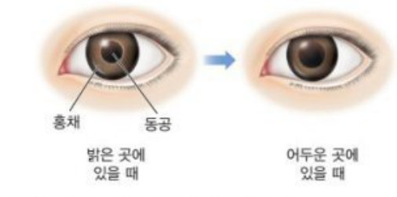
(2) 촉점이 많이 분포할수록 촉각이 둔감하다.
(3) 온점과 냉점은 절대적인 온도를 감각한다.
(4) 온도가 낮아지면 온점, 높아지면 냉점이 자극을 받는다.
| 부위 | 손바닥 | 팔뚝 | 등 | 손가락 끝 | 이마 |
|---|---|---|---|---|---|
| 거리(mm) | 10.3 | 38.4 | 39.5 | 2.7 | 17.0 |
하이탑 ③ 개념 확인 문제 01~21
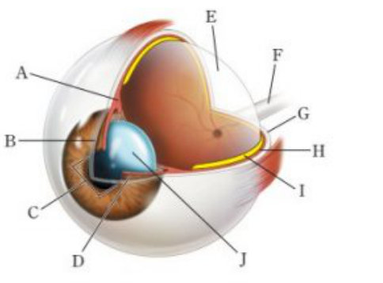
- ① A는 수정체의 두께를 조절한다.
- ② B와 C는 빛이 통과하는 통로이다.
- ③ D에는 시각 세포가 있다.
- ④ E와 G는 눈의 형태를 유지한다.
- ⑤ J는 빛을 굴절시켜 I에 상이 맺히도록 한다.
(2) 물체와의 거리에 따라 두께가 변하여 상이 망막에 정확히 맺히도록 한다.
(3) 검은색 색소가 있어 눈의 내부를 어둡게 한다.
(4) 시각 세포에서 받아들인 자극을 뇌로 전달한다.
- ① 맥락막 - 홍채 - 망막
- ② 맥락막 - 홍채 - 공막
- ③ 수정체 - 홍채 - 망막
- ④ 수정체 - 유리체 - 공막
- ⑤ 수정체 - 유리체 - 망막
- ㄱ. 오른쪽 눈의 망막에 닭의 상이 맺힌다.
- ㄴ. (가)에서 병아리의 상은 맹점에 맺힌다.
- ㄷ. (가)에서 병아리와 함께 닭도 보이지 않는다.
- ① ㄱ
- ② ㄴ
- ③ ㄱ, ㄴ
- ④ ㄴ, ㄷ
- ⑤ ㄱ, ㄴ, ㄷ
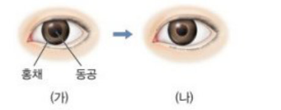
- ① 홍채가 축소되었다.
- ② 동공의 크기가 커졌다.
- ③ 처음보다 주변이 밝아졌다.
- ④ 물체의 상이 맹점에 맺히게 되었다.
- ⑤ 가까운 곳의 물체를 더 잘 볼 수 있게 되었다.
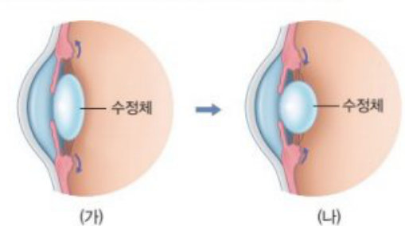
- ㄱ. 섬모체가 이완하였다.
- ㄴ. 먼 곳을 보다가 가까운 곳을 보았다.
- ㄷ. 어두운 곳에서 밝은 곳으로 이동하였다.
- ① ㄱ
- ② ㄴ
- ③ ㄷ
- ④ ㄱ, ㄴ
- ⑤ ㄴ, ㄷ
- ㄱ. 홍채는 (가)일 때보다 (나)일 때 더 넓다.
- ㄴ. 동공의 크기는 (나)일 때 더 크다.
- ㄷ. 수정체의 두께는 (가)일 때보다 (나)일 때 더 얇다.
- ① ㄱ
- ② ㄴ
- ③ ㄷ
- ④ ㄱ, ㄷ
- ⑤ ㄴ, ㄷ
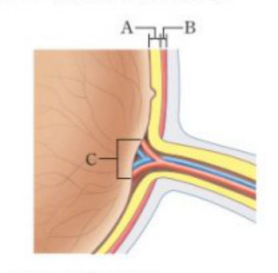
- ① A는 검은색 색소를 함유하는 막이다.
- ② A에는 빛을 감지하는 세포가 분포한다.
- ③ B는 뇌로 연결된다.
- ④ B는 눈에서 받아들인 자극을 전달한다.
- ⑤ C에 상이 맺히면 가장 뚜렷하게 볼 수 있다.
- ㄱ. 빛
- ㄴ. 소리
- ㄷ. 온도 변화
- ㄹ. 몸의 회전
- ㅁ. 기체 물질
- ㅂ. 몸의 기울어짐
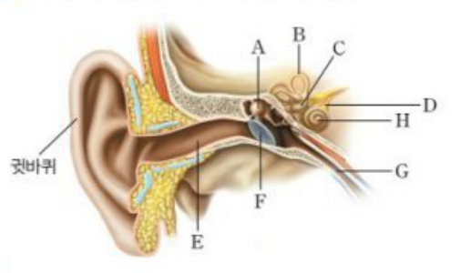
- ① A는 소리에 의해 최초로 진동한다.
- ② B는 소리를 증폭시킨다.
- ③ D는 몸의 기울기를 감지한다.
- ④ H에는 청각 세포가 있다.
- ⑤ G는 소리를 전달한다.
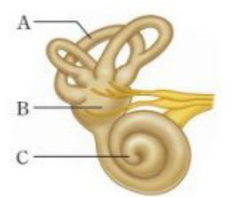
(나) 눈을 감고 회전의자에 앉아 있을 때 다른 사람이 의자를 돌리면 몸이 어떤 방향으로 회전하는지를 느낀다.
- ① (가) A, (나) B
- ② (가) A, (나) C
- ③ (가) B, (나) A
- ④ (가) B, (나) C
- ⑤ (가) C, (나) B
- ㄱ. ㉠은 기체 물질이다.
- ㄴ. 영희가 귤 냄새를 알아내는 데 뇌가 관여한다.
- ㄷ. ㉡은 같은 냄새에 후각이 피로해져 나타나는 현상이다.
- ① ㄴ
- ② ㄱ, ㄴ
- ③ ㄱ, ㄷ
- ④ ㄴ, ㄷ
- ⑤ ㄱ, ㄴ, ㄷ
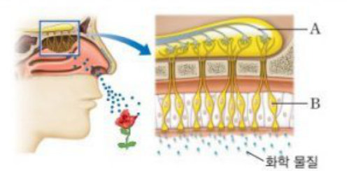
- ① A는 후각 세포이다.
- ② B는 후각 신경이다.
- ③ B가 느끼는 냄새의 종류는 5가지이다.
- ④ 기체 상태의 화학 물질이 B를 자극한다.
- ⑤ A가 받아들인 자극은 B를 거쳐 뇌로 전달된다.
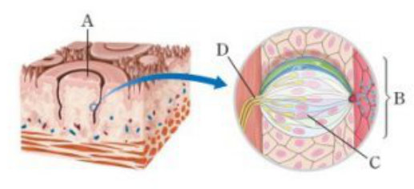
- ① A는 혀의 표면에 있는 돌기이다.
- ② B는 유두이다.
- ③ C는 액체 물질을 자극으로 받아들인다.
- ④ D는 맛을 느끼는 데 관여하는 신경이다.
- ⑤ 자극의 전달은 C에서 D로 일어난다.
- ① 단맛
- ② 쓴맛
- ③ 짠맛
- ④ 감칠맛
- ⑤ 매운맛
- ① 콧속 천장에 후각 세포가 있다.
- ② 미각은 후각에 비해 쉽게 피로해진다.
- ③ 혀에는 맛세포가 모인 맛봉오리가 있다.
- ④ 후각과 미각의 자극원은 모두 화학 물질이다.
- ⑤ 후각과 미각에는 감각 세포, 감각 신경, 뇌가 관여한다.
- ① 감각점은 상피 세포가 분화한 것이다.
- ② 통점은 촉점보다 강한 자극을 받아들인다.
- ③ 감각점은 피부의 모든 부위에 고르게 분포한다.
- ④ 온도 변화를 받아들이는 감각점은 한 종류이다.
- ⑤ 우리 몸에 가장 많이 분포하는 감각점은 압점이다.
- ① 감각점의 분포 수가 다르기 때문이다.
- ② 감각점의 구조가 다르기 때문이다.
- ③ 감각점의 모양이 다르기 때문이다.
- ④ 감각 신경의 모양이 다르기 때문이다.
- ⑤ 감각점이 분포하는 몸의 부위가 정해져 있기 때문이다.
하이탑 ④ 실력 강화 문제 01~10
- ① 눈의 맥락막에는 시각 세포가 분포한다.
- ② 귀의 달팽이관에서는 평형 감각을 담당한다.
- ③ 귀의 반고리관 내부에는 감각 세포가 분포한다.
- ④ 혀와 코에는 화학 물질을 자극으로 받아들이는 감각 세포가 있다.
- ⑤ 피부 감각은 몸의 부위에 관계없이 자극을 민감하게 받아들이는 정도가 같다.
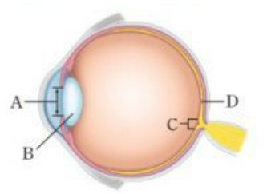
- ㄱ. 홍채가 축소하여 A가 커진다.
- ㄴ. 섬모체가 이완하고 B의 두께가 얇아진다.
- ㄷ. A의 크기 변화로 눈으로 들어오는 빛의 양이 감소한다.
- ① ㄱ
- ② ㄴ
- ③ ㄷ
- ④ ㄱ, ㄷ
- ⑤ ㄴ, ㄷ
- ① C는 황반이다.
- ② C와 D는 공막에 있다.
- ③ C에 상이 맺힐 때 가장 선명하게 보인다.
- ④ D에는 물체의 상이 맺히지 않는다.
- ⑤ D에는 시각 세포가 많이 분포하고 있다.
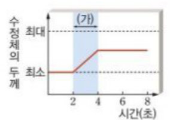
- ㄱ. 2~4초 동안 물체와 철수 사이의 거리가 가까워지고 있다.
- ㄴ. 4~8초 동안 물체의 상이 맺히는 위치는 맹점에 가까워진다.
- ㄷ. 물체의 크기는 2초일 때보다 8초일 때 더 크게 보인다.
- ① ㄱ
- ② ㄴ
- ③ ㄷ
- ④ ㄱ, ㄷ
- ⑤ ㄴ, ㄷ
- ㄱ. 물체의 상이 망막의 뒤에 맺힌다.
- ㄴ. 수정체에서 빛이 굴절되지 않는다.
- ㄷ. 망막에 상이 맺히더라도 물체를 볼 수 없다.
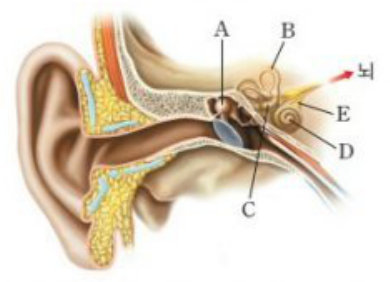
- ① A는 고막의 진동을 증폭시킨다.
- ② B는 몸이 기울어지는 자극을 받아들인다.
- ③ B와 C에는 감각 세포가 있다.
- ④ D는 청각과 평형 감각을 모두 담당한다.
- ⑤ E는 C에서 받아들인 자극을 뇌로 전달한다.
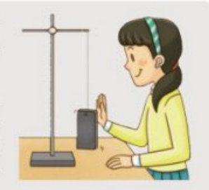
(나) 스마트폰에 손바닥을 대면 진동이 느껴지지만, 손바닥을 떼면 진동이 느껴지지 않는다.
(다) 귀마개로 귀를 막으면 소리가 들리지 않는다.
- ㄱ. (가)의 스마트폰에서는 진동이 발생한다.
- ㄴ. (나)에서 손바닥에 느껴지는 진동은 감각점을 통한 피부 감각이다.
- ㄷ. (다)에서 귀마개는 소리에 의해 고막이 진동하는 것을 막는다.
- ① ㄱ
- ② ㄷ
- ③ ㄱ, ㄴ
- ④ ㄴ, ㄷ
- ⑤ ㄱ, ㄴ, ㄷ
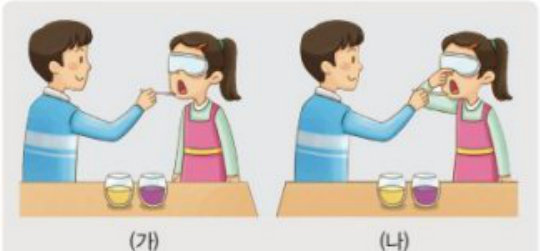
(나) 눈을 가린 채 코를 막은 후 맛보면 잘 구별하지 못한다.
- ㄱ. (가)에서 두 주스의 맛을 구별할 때 미각만 관여한다.
- ㄴ. (나)에서 맛볼 때 신경 세포를 통한 자극 전달이 일어난다.
- ㄷ. 이 실험으로 음식의 맛을 구별하는 데는 미각과 시각이 중요한 역할을 한다는 것을 알 수 있다.
- ① ㄱ
- ② ㄴ
- ③ ㄱ, ㄴ
- ④ ㄴ, ㄷ
- ⑤ ㄱ, ㄴ, ㄷ
- ① 뇌에서 구별하는 음식의 맛은 5가지이다.
- ② 혀는 미각뿐 아니라 피부 감각도 감지한다.
- ③ 콧속 천장에 있는 후각 세포는 액체 물질을 자극으로 받아들인다.
- ④ 피부의 감각점은 감각 신경과 연결되어 있어 자극이 뇌로 전달된다.
- ⑤ 맛세포와 후각 세포에서 받아들인 자극은 같은 신경을 통해 뇌로 전달된다.
하이탑 ⑤ 서술형 문제 1~9
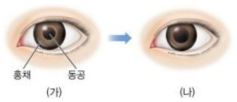
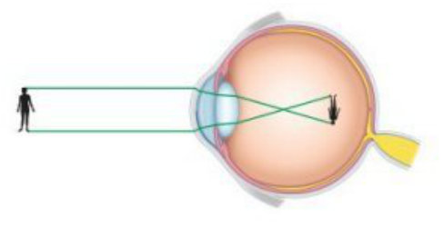
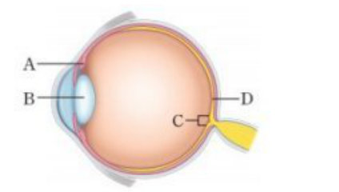
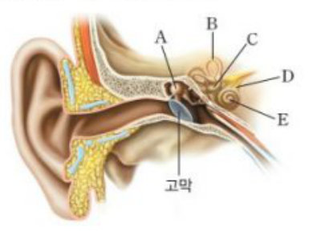
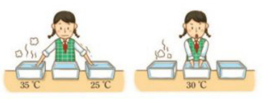
하이탑 ⑥ 최상위권 도전 문제 · 실전 문제 감각 기관 관련 문항만
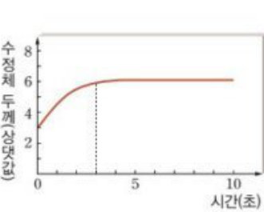
- ㄱ. 0~3초 동안 이 사람은 물체에서 멀어지고 있다.
- ㄴ. 0~3초 동안 이 사람의 눈에서는 섬모체가 수축하고 있다.
- ㄷ. 3~10초에 물체의 상은 망막의 앞에 맺힌다.
- ① ㄱ
- ② ㄴ
- ③ ㄱ, ㄴ
- ④ ㄱ, ㄷ
- ⑤ ㄴ, ㄷ
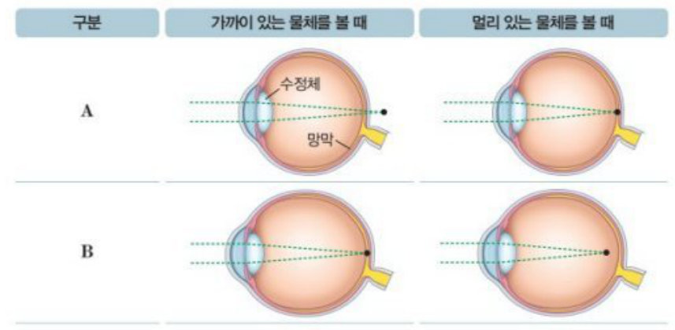
- ㄱ. A는 가까이 있는 물체가 잘 보이지 않는다.
- ㄴ. B는 오목 렌즈 안경으로 시력을 교정할 수 있다.
- ㄷ. A는 멀리 있는 물체를 볼 때, B는 가까이 있는 물체를 볼 때 상이 맹점에 맺힌다.
- ① ㄱ
- ② ㄴ
- ③ ㄱ, ㄴ
- ④ ㄴ, ㄷ
- ⑤ ㄱ, ㄴ, ㄷ
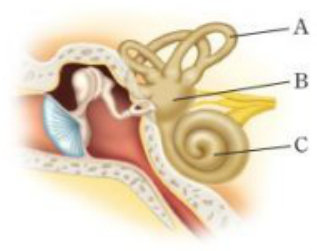
- ㄱ. A에서 몸이 회전하는 것을 느낄 수 있게 해 준다.
- ㄴ. B는 기압 변화에 민감하게 반응하여 귀 내부 압력을 조절한다.
- ㄷ. C에서 받아들인 자극은 감각 신경을 통해 소뇌로 전달된다.
- ① ㄱ
- ② ㄷ
- ③ ㄱ, ㄴ
- ④ ㄱ, ㄷ
- ⑤ ㄴ, ㄷ
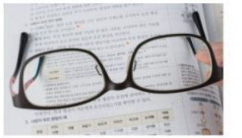
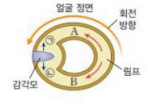
교과서 ① 탐구 · 해 보기 · 스스로 확인하기
교과서 ② 스스로 정리하기
(2) 황반은 망막에서 시각 세포가 없는 곳이다.
(3) 멀리 있는 물체를 볼 때 수정체가 얇아진다.
(4) 주변이 밝아지면 동공이 커져 눈으로 들어오는 빛의 양이 줄어든다.
- ㄱ. 고막의 진동이 귓속뼈를 지나면서 증폭된다.
- ㄴ. 피부에 얼음이 닿으면 냉점에서 자극을 받아들여 차가움을 느낀다.
- ㄷ. 소리를 들을 때는 반드시 반고리관과 전정 기관이 관여한다.
(2) 혀 표면의 작은 돌기 옆면에 있는 맛봉오리에 맛세포가 모여 있다.
교과서 ③ 스스로 최종 점검하기 감각 기관 관련 문항
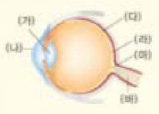
- ① (가)는 눈으로 들어오는 빛의 양을 조절한다.
- ② (나)는 물체의 상이 맺히는 부분이다.
- ③ (다)는 망막이다.
- ④ (라)는 맹점으로, 상이 맺히면 물체가 잘 보인다.
- ⑤ (마)는 황반으로, 시각 신경 (바)가 모여 나간다.
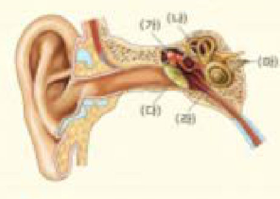
- ㄱ. 미각은 기체 물질을 자극으로 받아들인다.
- ㄴ. 우리가 평상시 느끼는 음식 맛은 미각과 후각이 합쳐진 것이다.
- ㄷ. 후각 세포에서 받아들인 자극이 후각 신경을 통해 뇌로 전달되어 냄새를 맡는다.
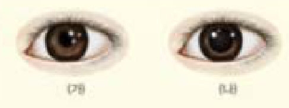
Ⅳ-1 감각 기관 · 정답과 해설
| 번호 | 정답 | 해설 · 포인트 |
|---|---|---|
| 하이탑 · 학습 내용 Check | ||
| C1 | 수정체 | |
| C2 | 홍채 | |
| C3 | 망막 | |
| C4 | 각막, 뇌 | |
| C5 | 커, 작아 | |
| C6 | 얇아, 두꺼워 | |
| C7 | 고막, 달팽이관 | |
| C8 | 전정 기관 | |
| C9 | 반고리관 | |
| C10 | 후각 상피 | |
| C11 | 기체, 후각 신경 | |
| C12 | 맛봉오리 | |
| C13 | 액체, 미각 신경 | |
| C14 | 감칠맛 | |
| C15 | 감각점 | |
| C16 | 압점, 통점 | |
| C17 | 뇌 | |
| 하이탑 · 탐구 확인 문제 | ||
| T1 | (1)× (2)○ (3)× (4)○ (5)× | 종이는 빛이 너무 강하지 않게 하려고 붙인다. 어두운 곳에서 해야 변화가 뚜렷하다. 빛을 비추면 홍채 확장 → 동공 축소. |
| T2 | 홍채 | 어두운 곳으로 가면 홍채가 축소하여 동공이 커지고, 눈으로 들어오는 빛의 양이 증가한다. |
| T3 | (1)○ (2)× (3)× (4)× | 촉점이 많을수록 예민. 온점·냉점은 온도 "변화"를 감지하고, 온도가 낮아지면 냉점·높아지면 온점이 자극을 받는다. (25℃ 물에서 오른손은 따뜻, 왼손은 차갑게 느낌) |
| T4 | 손가락 끝 | 두 점을 구별하는 최소 거리가 가장 짧아 촉점이 가장 조밀하게(많이) 분포하기 때문이다. |
| 하이탑 · 개념 확인 문제 | ||
| 01 | ③ | A 섬모체, B 각막, C 동공, D 홍채, E 유리체, F 시각 신경, G 공막, H 맥락막, I 망막, J 수정체. 시각 세포는 망막(I)에 있다. |
| 02 | (1) D 홍채 (2) J 수정체 (3) H 맥락막 (4) F 시각 신경 | |
| 03 | ⑤ | 빛은 홍채·맥락막·공막을 지나지 않는다. |
| 04 | ③ | 주시하는 닭은 황반 근처에 상이 맺혀 잘 보인다. 병아리만 맹점에 맺혀 안 보임. |
| 05 | ③ | (가) 동공 큼 → (나) 동공 작음: 주변이 밝아져 홍채가 확장하고 동공이 작아졌다. |
| 06 | ② | 수정체가 두꺼워짐 = 섬모체 수축 = 가까운 곳을 봄. 밝기와 수정체 두께는 무관. |
| 07 | ⑤ | (나) 어둡고 멀다 → 홍채 축소(좁음)·동공 확대, 섬모체 이완·수정체 얇음. |
| 08 | ② | A 망막(시각 세포), B 맥락막(검은 색소), C 맹점(시각 세포 없음 → 안 보임). |
| 09 | ㄴ, ㄹ, ㅂ | 소리(달팽이관), 회전(반고리관), 기울어짐(전정 기관). |
| 10 | ④ | A 귓속뼈, B 반고리관, C 전정 기관, D 청각 신경, E 외이도, F 고막, G 귀인두관, H 달팽이관. |
| 11 | ㉠E ㉡F ㉢A ㉣H ㉤D | 외이도 → 고막 → 귓속뼈 → 달팽이관 → 청각 신경 |
| 12 | B 반고리관, C 전정 기관 | |
| 13 | G 귀인두관 | 고막 안팎의 압력을 같게 조절한다. |
| 14 | ③ | A 반고리관(회전), B 전정 기관(기울어짐), C 달팽이관. |
| 15 | ⑤ | |
| 16 | ④ | A 후각 신경, B 후각 세포. 자극은 B(후각 세포) → A(후각 신경) → 뇌. |
| 17 | ② | A 유두, B 맛봉오리, C 맛세포, D 미각 신경. |
| 18 | ⑤ | 매운맛은 통점이 자극을 받는 피부 감각. |
| 19 | ② | 쉽게 피로해지는 것은 후각. |
| 20 | ② | 감각점은 신경 말단이 분화한 것, 부위마다 분포 다름, 온점·냉점 두 종류, 가장 많은 것은 통점. |
| 21 | ① | |
| 하이탑 · 실력 강화 문제 | ||
| 01 | ③, ④ | |
| 02 | ① | A 동공, B 수정체, C 맹점, D 황반. 밝기는 수정체와 무관, 동공이 커지면 빛의 양 증가. |
| 03 | ⑤ | C 맹점, D 황반 — 둘 다 망막에 있다. |
| 04 | 수축 | |
| 05 | ① | 4~8초는 두께 일정 → 거리 일정, 상은 계속 망막에. 물체 자체의 크기가 변하는 것은 아니다. |
| 06 | ㄷ | |
| 07 | ①, ③ | A 귓속뼈, B 반고리관, C 전정 기관, D 달팽이관, E 청각 신경. |
| 08 | ⑤ | |
| 09 | ② | (가)에서는 미각과 후각이 함께 관여. 이 실험은 미각과 "후각"의 중요성을 보여 준다. |
| 10 | ②, ④ | 뇌는 미각·후각을 종합해 훨씬 다양한 맛을 구별. 후각=기체. 미각 신경과 후각 신경은 다른 신경. |
| 하이탑 · 서술형 문제 | ||
| 1 | 서술형 | 밝은 곳에서 어두운 곳으로 이동하였기 때문이다. 어두운 곳에서는 홍채가 축소하여 동공이 커지고, 눈으로 들어오는 빛의 양이 증가한다. |
| 2 | 오목 렌즈 | 상이 망막 앞에 맺히면 망막의 시각 세포가 선명한 상을 받아들이지 못한다. 오목 렌즈로 빛을 퍼지게 하면 상이 뒤로 이동해 망막에 맺히고, 시각 세포가 받아들인 자극이 시각 신경을 통해 뇌로 전달되어 선명하게 볼 수 있다. |
| 3 | 서술형 | A 섬모체가 수축하여 B 수정체가 두꺼워진다. |
| 4 | C 맹점 | 병아리의 상이 맹점에 맺혔기 때문이다. 맹점은 시각 신경이 모여 나가는 곳으로 시각 세포가 없어 자극이 시각 신경을 통해 뇌로 전달되지 않는다. |
| 5 | 서술형 | 소리에 의해 고막이 진동하면 A 귓속뼈가 진동을 증폭시켜 E 달팽이관으로 전달하고, 달팽이관의 청각 세포가 자극을 받아들여 D 청각 신경을 통해 뇌로 전달한다. |
| 6 | B 반고리관 | 몸의 회전을 감지한다(회전 감각). |
| 7 | 단맛, 짠맛, 신맛, 쓴맛, 감칠맛 | 음식의 맛은 미각과 후각(음식 냄새) 등을 뇌에서 종합하여 느끼기 때문이다. |
| 8 | 서술형 | (1) 매운맛은 혀와 입속 피부의 통점(감각점)이 자극을 받아 피부 감각 신경을 통해 뇌로 전달되어 느끼는 피부 감각이다. (2) 녹은(액체 상태) 아이스크림의 화학 물질이 맛봉오리의 맛세포를 자극하고, 미각 신경을 통해 뇌로 전달된다. |
| 9 | 서술형 | 온점과 냉점은 절대적인 온도가 아니라 상대적인 온도 변화를 감지한다. 오른손은 온도가 낮아져 냉점이, 왼손은 온도가 높아져 온점이 자극을 받는다. |
| 하이탑 · 최상위권 도전 / 실전 문제 | ||
| 도1 | ② | 두께 증가 = 섬모체 수축 = 가까워짐. 정상인은 초점 조절 후 상이 망막에 맺힌다. |
| 도3 | ③ | A: 가까운 물체의 상이 망막 뒤 → 원시. B: 먼 물체의 상이 망막 앞 → 근시(오목 렌즈). 맹점과는 무관. |
| 도4 | ① | A 반고리관, B 전정 기관(기울어짐), C 달팽이관(청각 → 대뇌). 압력 조절은 귀인두관. |
| 실1 | 근시 | 근시는 먼 곳의 상이 망막 앞에 맺혀 오목 렌즈로 교정한다. 오목 렌즈는 빛을 퍼지게 하여 실제보다 작은 상을 만들기 때문에 글씨가 작게 보인다. |
| 실2 | 서술형 | 회전을 멈추면 반고리관(관)은 멈추지만 관 속의 림프는 관성에 의해 원래 회전 방향으로 계속 흐른다. 이 림프가 감각모를 휘게 하여 감각 세포를 계속 자극하므로 회전하는 것처럼 느낀다. |
| 교과서 · 탐구 / 해 보기 / 스스로 확인하기 | ||
| 탐1 | 빛 → 각막 → 동공 → 수정체 → 유리체 → 망막 | |
| 탐2 | 서술형 | 그림의 상이 맹점에 맺혔기 때문이다. 맹점에는 시각 세포가 없어 상이 맺혀도 볼 수 없다. |
| 해1 | 서술형 | 밝아지면 홍채가 확장하여 동공이 작아지고, 어두워지면 홍채가 축소하여 동공이 커진다. |
| 확1-1 | 시각 세포 | |
| 확1-2 | 커, 작아 | |
| 확1-3 | 서술형 | 밝아지므로 홍채가 확장하여 동공이 작아져 들어오는 빛의 양이 줄고, 먼 곳을 보므로 섬모체가 이완하여 수정체가 얇아진다. |
| 해2 | 서술형 | 소리는 공기(매질)의 진동으로 전달되므로 떨어져 있어도 들리지만, 진동의 촉감(피부 감각)은 피부가 직접 닿아야 느낄 수 있다. |
| 확2-1 | 달팽이관 | |
| 확2-2 | 감각점 | |
| 확2-3 | 서술형 | 일반 이어폰: 공기의 진동 → 고막 → 귓속뼈 → 달팽이관(청각 세포). 뼈 전도 이어폰: 머리뼈의 진동이 고막과 귓속뼈를 거치지 않고 직접 달팽이관으로 전달된다. |
| 해3 | 서술형 | 음식의 맛은 미각과 후각을 뇌에서 종합하여 느끼는데, 코감기로 후각이 제대로 작용하지 못하기 때문이다. |
| 확3-1 | 액체 | |
| 확3-2 | 기체 | |
| 확3-3 | 서술형 | 맛세포는 액체 상태의 화학 물질을 자극으로 받아들이므로, 아이스크림이 녹아(침에 녹아) 액체가 되어야 맛세포를 자극할 수 있다. |
| 교과서 · 스스로 정리하기 | ||
| 정1 | (1)○ (2)× (3)○ (4)× | 시각 세포가 없는 곳은 맹점. 밝아지면 동공이 작아진다. |
| 정2 | ㄱ, ㄴ | |
| 정3 | (1)× (2)○ | |
| 교과서 · 스스로 최종 점검하기 (감각 기관 문항) | ||
| 점❶ | 망막 | |
| 점❷ | 작아, 얇아 | |
| 점❸ | 귓속뼈 | |
| 점❹ | 감각점 | |
| 01 | ① | (가) 홍채, (나) 각막, (마) 맹점, (바) 시각 신경. 상은 망막에 맺히고(각막 X), 맹점에 상이 맺히면 보이지 않으며, 시각 신경이 모여 나가는 곳은 황반이 아니라 맹점이다. |
| 02 | (라) 달팽이관 | (가) 귓속뼈, (나) 반고리관, (다) 고막, (라) 달팽이관, (마) 청각 신경 |
| 03 | ㄴ, ㄷ | |
| 06 | 서술형 | 주변이 어두워지면 홍채가 축소하여 동공이 커지고, 눈으로 들어오는 빛의 양이 많아진다. |
생장과 생식
세포 분열 · 체세포 분열 · 생식세포 분열 · 수정과 발생
개념 정리 기본 → 응용 → 발전 → 심화
세포 분열 · 염색체 · 생식 기관 — 용어 확실히
① 세포 분열이 필요한 까닭
생물이 자랄 때(생장) 세포가 계속 커지는 것이 아니라 세포의 수가 늘어난다. 세포가 커지면 부피가 증가하는 비율보다 표면적이 증가하는 비율이 작아 부피에 대한 표면적의 비(표면적/부피)가 작아지고, 표면을 통한 물질 교환이 비효율적이 된다. → 어느 정도 커지면 분열한다.
| 정육면체 한 변 | 1 cm | 2 cm | 3 cm |
|---|---|---|---|
| 표면적 (6×한 변²) | 6 | 24 | 54 |
| 부피 (한 변³) | 1 | 8 | 27 |
| 표면적/부피 | 6 | 3 | 2 |
용어: 분열 전 세포 = 모세포, 분열로 생긴 세포 = 딸세포.
② 염색체 · DNA · 유전자
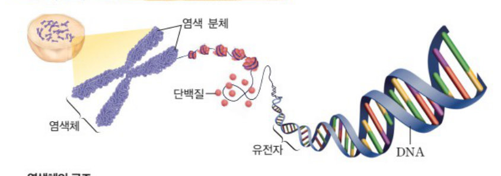
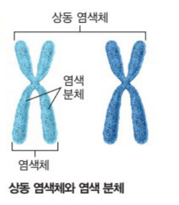
- 염색체 = DNA + 단백질. 분열하지 않을 때는 핵 속에 실처럼 풀어져 있다가, 분열할 때 응축되어 막대 모양으로 보인다.
- 염색 분체: 하나의 염색체를 이루는 두 가닥. 분열 전 DNA가 복제되어 만들어졌으므로 유전 정보가 같다.
- 유전자: DNA에서 유전 정보를 저장하고 있는 특정 부위. (정보막대=염색체, 저장된 파일=유전자)
- 상동 염색체: 모양과 크기가 같은 한 쌍. 부모에게서 하나씩 물려받으므로 유전 정보는 서로 다를 수 있다.
- 상염색체: 남녀 공통 (사람 1~22번, 44개) · 성염색체: 성 결정 (X, Y)
- 사람 체세포: 46개 = 23쌍. 여자 44+XX, 남자 44+XY.
남자의 X는 어머니, Y는 아버지에게서. 여자의 X는 부모에게서 하나씩. - 핵상 표기: 상동 염색체 쌍이 있으면 2n(사람 2n=46), 없으면 n(생식세포 n=23).
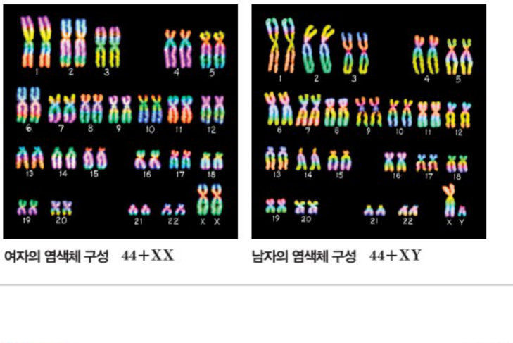
| 생물 | 염색체 수 | 생물 | 염색체 수 |
|---|---|---|---|
| 사람 | 46 | 초파리 | 8 |
| 개 | 78 | 벼 | 24 |
| 고양이 | 38 | 완두 | 14 |
| 침팬지 | 48 | 감자 | 48 |
③ 생식 기관과 생식세포
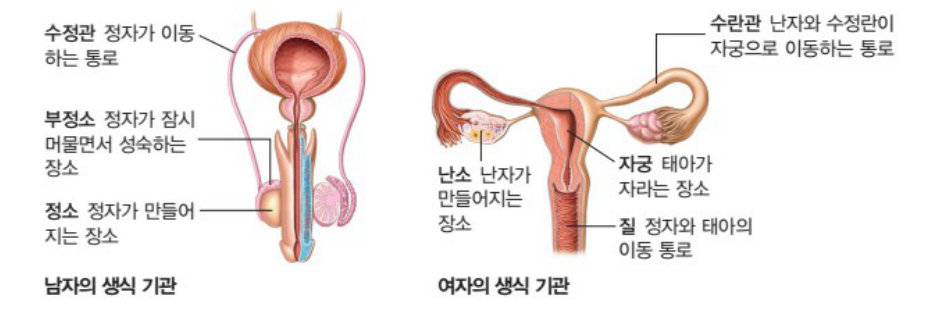
| 정자 | 난자 | |
|---|---|---|
| 생성 장소 | 정소 | 난소 |
| 염색체 수 | 23 | 23 |
| 크기 | 작다 | 크다 |
| 양분(세포질) | 거의 없다 | 많다 |
| 운동성 | 있다 (꼬리) | 없다 |
- 정소(정자 생성) → 부정소(정자가 잠시 머물며 성숙) → 수정관(정자 이동 통로)
- 난소(난자 생성·배란) → 수란관(수정이 일어나는 곳, 난자·수정란 이동) → 자궁(태아가 자라는 곳) → 질
체세포 분열 · 생식세포 분열 · 발생 — 과정 순서대로
① 체세포 분열 — 염색체 수 유지 (2n → 2n)
세포 주기 = 간기 + 분열기. 간기: 세포가 자라고 DNA 복제, 세포 주기의 대부분을 차지, 핵막이 뚜렷하고 염색체는 안 보인다.
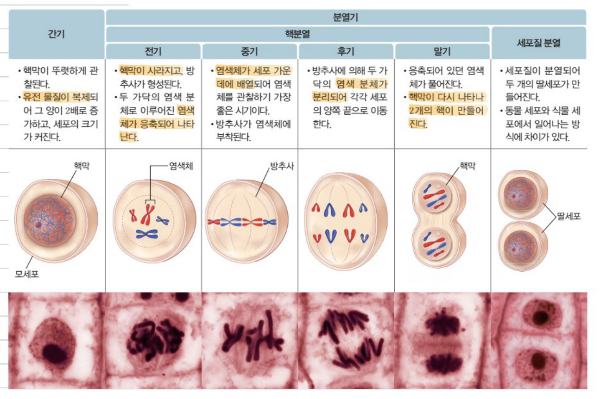
| 시기 | 핵심 한 줄 |
|---|---|
| 전기 | 핵막이 사라지고, 두 가닥의 염색 분체로 된 막대 모양 염색체가 나타남, 방추사 형성 |
| 중기 | 염색체가 세포 가운데 배열 → 염색체 관찰에 가장 좋은 시기 |
| 후기 | 염색 분체가 분리되어 양 끝(양극)으로 이동 |
| 말기 | 염색체가 풀어지고 핵막이 다시 나타나 2개의 핵 → 세포질 분열 |
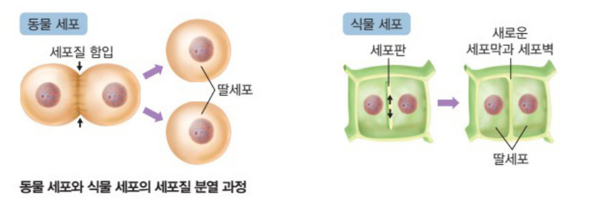
- 동물 세포: 세포막이 바깥에서 안쪽으로 잘록하게 함입
- 식물 세포: 두 핵 사이에 세포판이 생겨 안에서 바깥으로 자람
- 결과·의의: 모세포와 염색체 수·유전 정보가 같은 딸세포 2개 → 생장(다세포), 재생(도마뱀 꼬리, 상처), 번식(단세포 생물: 아메바·짚신벌레·세균의 분열법)
- 관찰 장소: 식물 뿌리 끝·줄기 끝 생장점, 형성층 / 동물 온몸
② 생식세포 분열 (감수 분열) — 염색체 수 절반 (2n → n)
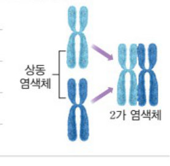
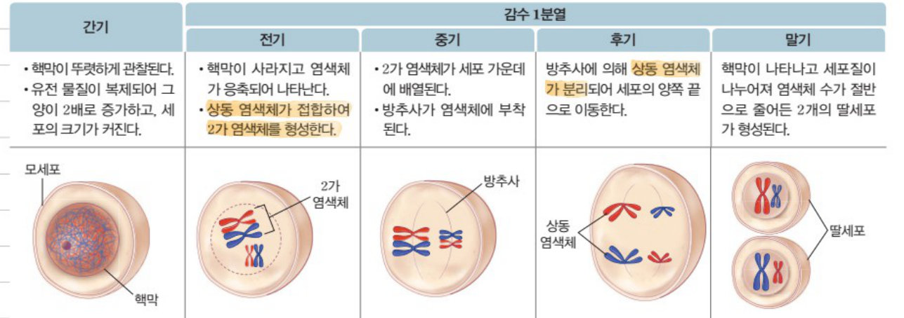
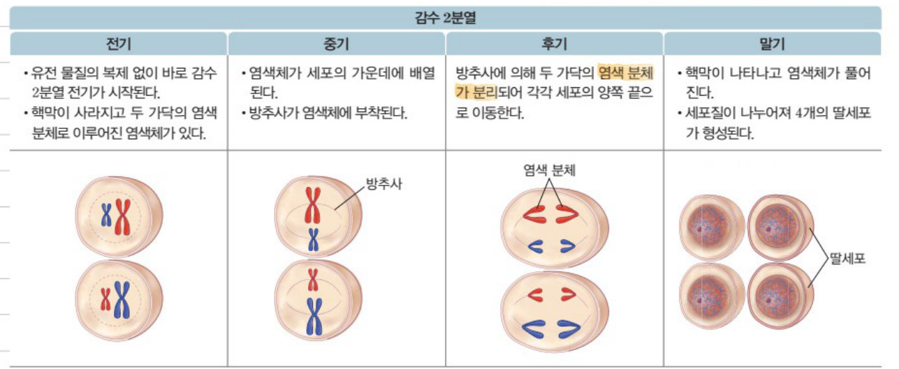
| 감수 1분열 | 감수 2분열 | |
|---|---|---|
| 핵심 사건 | 전기에 2가 염색체 형성 → 후기에 상동 염색체 분리 | 간기 없이(DNA 복제 없이) 바로 시작 → 후기에 염색 분체 분리 |
| 염색체 수 | 2n → n (절반) | n → n (변화 없음) |
| DNA양 (핵 1개당) | 4 → 2 | 2 → 1 |
| 결과 | 딸세포 2개 | 딸세포 4개 (정자·난자) |
② 감수 1분열 중기에 상동 염색체 쌍이 무작위로 배열·분리 → 유전적으로 다양한 생식세포 → 자손의 다양성.
③ 수정과 발생
- 수정란: 정자(23) + 난자(23) → 46 (체세포와 같다)
- 난할: 수정란의 초기 세포 분열 (체세포 분열의 일종). 딸세포가 자라지 않고 빠르게 분열 → 세포 수 ↑, 세포 하나 크기 ↓, 염색체 수 그대로, 배아 전체 크기는 수정란과 비슷
- 포배: 속이 빈 공 모양의 배 · 임신: 착상된 때부터 · 태아: 수정 후 8주 이후(사람의 모습)
- 태반: 모체와 태아 사이 물질 교환 (영양소·산소 → 태아, 이산화 탄소·노폐물 → 모체)
- 발생: 수정란이 세포 분열을 하며 조직·기관을 형성하여 하나의 개체가 되는 과정 (세포 수 증가 + 세포의 종류가 다양해짐)
탐구 · 비교 · 난할 — 표로 정리
① 탐구 3종 완벽 정리
- A: 2 cm 정육면체 1개 / B: 1 cm 정육면체 8개 → 총부피 같음(8), 표면적 A 24, B 48
- 식용 색소에 10분 → B는 중심까지 물들고 A는 중심이 흰색
- 결론: 작을수록 표면적/부피가 커서 물질 교환에 유리 → 세포 분열로 수를 늘려 생장
- 교과서: 4×2×2 cm 직육면체(부피 16, 표면적 40) vs 2 cm 정육면체 2개(부피 16, 표면적 48)
| 과정 | 약품·조작 | 목적 |
|---|---|---|
| 고정 | 에탄올:아세트산 = 3:1 | 세포를 살아 있을 때 모습으로 유지 |
| 해리 | 묽은 염산, 55~60℃ 물중탕 | 조직을 연하게 → 세포가 잘 분리 |
| 염색 | 아세트산 카민 용액 | 핵과 염색체를 붉게 |
| 분리 | 해부 침으로 잘게 찢기 | 세포를 서로 떼어 놓기 |
| 압착 | 거름종이 위로 엄지로 누름 | 세포를 한 층으로 얇게 펴기 |
관찰 결과: 간기 세포가 가장 많다 → 간기가 세포 주기에서 가장 긴 시기. 뿌리 끝 생장점에서 관찰.
② 체세포 분열 vs 생식세포 분열 한눈에
| 구분 | 체세포 분열 | 생식세포 분열 |
|---|---|---|
| 분열 횟수 | 1회 | 연속 2회 |
| 딸세포 수 | 2개 | 4개 |
| 2가 염색체 | 형성 안 됨 | 감수 1분열 전기에 형성 |
| 염색체 수 변화 | 변화 없음 (2n → 2n) | 절반 (2n → n) |
| 딸세포 유전자 구성 | 모세포와 같다 | 모세포와 다르며 다양 |
| 분열 결과 | 생장, 재생, 단세포 생물 번식 | 생식세포 형성 |
| 분열 장소 | 동물: 몸 전체 / 식물: 생장점, 형성층 | 동물: 정소, 난소 / 식물: 꽃밥, 밑씨 |
| 공통점 | 분열 전 간기에 DNA 복제 · 분열기에 염색체 응축 · 염색 분체 분리가 일어남 | |
③ 난할의 특징 표
| 구분 | 수정란 | 2세포배 | 4세포배 | 8세포배 | 16세포배 |
|---|---|---|---|---|---|
| 세포 수 | 1 | 2 | 4 | 8 | 16 |
| 세포 하나의 상대적 크기 | 1 | 1/2 | 1/4 | 1/8 | 1/16 |
| 세포 하나의 염색체 수 | 46 | 46 | 46 | 46 | 46 |
| 배 전체 크기 | 거의 일정 (세포 수 × 세포 크기) | ||||
그래프 · 수 세기 · 시기 판단 — 고난도 대비
① DNA 상대량 그래프
- 그래프가 2 → 4로 올라가는 구간 = 간기(DNA 복제)
- 체세포: 4 → 2 한 번 · 생식세포: 4 → 2 → 1 두 번 (두 번째 감소 = 감수 2분열)
- 염색체 수는 감수 1분열에서만 절반. 감수 2분열은 염색체 수 그대로, DNA양만 절반.
② 사람 세포의 수 세기 (2n = 46)
| 시기 | 염색체 수 | 염색 분체 수 | DNA 상대량 | 상동 염색체 |
|---|---|---|---|---|
| 간기 (복제 전) | 46 | – | 2 | 있음 |
| 체세포 분열 전기·중기 | 46 | 92 | 4 | 있음 (2가 X) |
| 감수 1분열 전기·중기 | 46 (2가 23개) | 92 | 4 | 있음 (2가 O) |
| 감수 2분열 전기·중기 | 23 | 46 | 2 | 없음 |
| 정자·난자 | 23 | – | 1 | 없음 |
2n=2k인 생물의 생식세포 염색체 조합 수 = 2k (예: 2n=4 → 4가지, 2n=6 → 8가지, 사람 → 223가지)
③ 세포 그림 보고 시기 판단하기
- 핵막이 있고 염색체가 안 보임 → 간기
- 상동 염색체끼리 붙어 있다(2가 염색체) → 감수 1분열 (전기·중기)
- 세포 안에 모양·크기가 같은 쌍이 있는데 2가가 아님, 한 줄로 배열 → 체세포 분열 중기
- 모든 염색체의 모양이 서로 다름(상동 없음) + 두 가닥 → 감수 2분열
- 양극으로 이동하는 것이 두 가닥 염색체 → 감수 1분열 후기 / 한 가닥인데 한쪽 극에 상동 쌍 있음 → 체세포 후기, 상동 쌍 없음 → 감수 2분열 후기
④ 난할의 세포 주기 (심화)
세포 주기의 간기 = G1기(생장) + S기(DNA 복제) + G2기(분열 준비). 일반 체세포는 90% 이상이 간기지만, 난할은 G1·G2기가 거의 없어 세포가 생장하지 않고 DNA 복제 후 바로 분열한다 → 분열이 빠르고, 세포 크기가 점점 작아진다. 세포 1개당 DNA양과 염색체 수는 일정하게 유지.
난자는 감수 1분열까지만 마친 상태로 배란되고, 정자가 들어오면 감수 2분열을 완료한다 (하이탑 최상위 4번).
- 염색 분체 두 가닥 = 같은 유전 정보 / 상동 염색체 두 개 = 부모에게서 온 다를 수 있는 유전 정보
- 체세포 분열에서도 상동 염색체는 존재하지만 접합(2가)하지 않는다
- 상동 염색체 분리 = 감수 1분열, 염색 분체 분리 = 체세포 분열·감수 2분열
- 감수 1분열과 2분열 사이에 DNA 복제 없음
- 양파 뿌리 끝 = 체세포 분열 관찰 (감수 분열 X) · 꽃밥 = 생식세포 분열
- 염산 처리는 세포 분열 촉진이 아니라 조직을 연하게(해리) · 아세트산 카민은 방추사가 아니라 핵·염색체 염색
- 난할이 진행돼도 세포 하나의 염색체 수는 줄지 않는다 · 세포질 양은 감소
- 남자의 X 염색체는 반드시 어머니에게서, Y는 아버지에게서
- 세포 주기 분열기의 구분 기준은 염색체의 모양과 행동
문제 정리
하이탑 전 문항 + 교과서 전 문항
하이탑 ① 학습 내용 Check 빈칸 채우기
- C1 생장은 몸을 구성하는 의 수가 증가하여 일어난다.
- C2 세포 분열 전의 세포는 , 분열하여 만들어진 2개의 세포는 라고 한다.
- C3 세포는 크기가 ( 클, 작을 )수록 물질 교환이 효율적으로 일어난다.
- C4 핵 속에 실처럼 풀어져 있다가 세포가 분열할 때 응축되어 나타나는 막대 모양의 구조는 이다.
- C5 하나의 염색체는 유전 정보가 같은 두 가닥의 로 구성된다.
- C6 체세포에 있는 모양과 크기가 같은 한 쌍의 염색체를 라고 한다.
- C7 사람의 염색체는 총 개이며, 이 중 상염색체는 개, 성염색체는 개이다.
- C8 세포 분열을 끝낸 세포가 자라서 다시 분열을 마치기까지의 과정을 라고 한다.
- C9 세포 주기 중 핵 속의 DNA가 복제되는 시기는 이다.
- C10 핵분열 전기에는 이 사라지고, 두 가닥의 염색 분체로 이루어진 가 나타난다.
- C11 핵분열의 에는 염색체가 세포 가운데에 배열되고, 에는 염색 분체가 분리되어 양 끝으로 이동한다.
- C12 식물 세포는 두 핵 사이에 이 만들어지면서 세포질이 분리된다.
- C13 체세포 분열 결과 생긴 딸세포의 염색체 수와 유전 정보는 모세포와 ( 같다, 다르다 ).
- C14 감수 1분열 전기에는 염색체가 접합하여 염색체를 형성한다.
- C15 감수 1분열에는 가 분리되고, 감수 2분열에는 가 분리된다.
- C16 생식세포 분열에서는 세포 분열이 연속으로 회 일어나 염색체 수가 모세포의 인 딸세포가 형성된다.
- C17 체세포 분열에서는 ( 2, 4 )개, 생식세포 분열에서는 ( 2, 4 )개의 딸세포가 만들어진다.
- C18 정자는 에서, 난자는 에서 만들어진다.
- C19 수정란이 난할을 거듭할수록 세포의 수는 ( 많아, 적어 )지고, 각 세포의 크기는 ( 커, 작아 )진다.
- C20 수정란이 속이 빈 공 모양의 가 되어 자궁 내벽에 붙는 현상을 이라고 한다.
- C21 수정 후 약 일이 지나면 태아가 모체 밖으로 나오는 이 일어난다.
하이탑 ② 탐구 확인 문제
(2) 과정 ①에서 우무 조각의 전체 표면적은 B가 A의 2배이다.
(3) 과정 ②에서 식용 색소 용액은 우무 조각이 모두 잠길 정도로 넣는다.
(4) 과정 ③에서 우무 조각의 크기가 클수록 색소가 중심까지 물든다.
(5) 과정 ③에서 A와 B의 우무 조각 전체로 스며든 식용 색소의 양은 같다.
| A (1 cm) | B (2 cm) | |
|---|---|---|
| 표면적(cm²) | 6 | ㉠ |
| 부피(cm³) | 1 | ㉡ |
| 표면적/부피 | 6 | ㉢ |
(2) 과정 ②에서 세포 분열이 촉진된다.
(3) 과정 ③에서 핵과 염색체가 붉은색으로 염색된다.
(4) 과정 ④는 세포벽을 부드럽게 하기 위한 것이다.
(5) 과정 ⑤는 세포를 한 층으로 얇게 펴기 위한 것이다.
하이탑 ③ 개념 확인 문제 01~20
- ㄱ. 하나의 세포가 둘로 나누어지는 것이다.
- ㄴ. 세포의 크기가 커지면 표면적/부피 값이 작아진다.
- ㄷ. 다세포 생물은 세포 분열로 세포 수를 늘려 생장한다.
- ① ㄱ
- ② ㄴ
- ③ ㄱ, ㄷ
- ④ ㄴ, ㄷ
- ⑤ ㄱ, ㄴ, ㄷ
- ㄱ. 우무 조각의 단면에서 색소가 이동한 거리는 A보다 B가 길다.
- ㄴ. 우무를 세포로 가정할 때, 물질 교환의 효율은 B보다 A가 높다.
- ㄷ. 표면적/부피 값은 B보다 A가 크다.
- ① ㄱ
- ② ㄴ
- ③ ㄱ, ㄷ
- ④ ㄴ, ㄷ
- ⑤ ㄱ, ㄴ, ㄷ
- ① (가)는 상동 염색체이다.
- ② (나)는 염색체이다.
- ③ (나)는 분열하는 세포에서 관찰된다.
- ④ (다)에는 유전 정보가 저장되어 있다.
- ⑤ (다)는 (나)에 포함되어 있다.
- ㄱ. 간기의 세포를 관찰한 것이다.
- ㄴ. (가)가 복제되어 (나)가 형성된다.
- ㄷ. (가)를 어머니로부터 받았다면, (나)는 아버지로부터 받은 것이다.
- ① ㄱ
- ② ㄷ
- ③ ㄱ, ㄴ
- ④ ㄴ, ㄷ
- ⑤ ㄱ, ㄴ, ㄷ
- ① 사람의 체세포에는 44개의 상염색체가 있다.
- ② (가)는 남자, (나)는 여자의 염색체 구성이다.
- ③ (가)에서 A는 아버지에게서, B는 어머니에게서 물려받은 것이다.
- ④ (나)에는 23쌍의 상동 염색체가 있다.
- ⑤ (나)의 성염색체 중 하나는 아버지에게서 물려받은 것이다.
- ① 간기에는 염색체가 관찰된다.
- ② 간기는 분열기에 비해 소요 시간이 짧다.
- ③ 유전 물질의 복제는 간기에 일어난다.
- ④ 세포질 분열이 일어난 후에 핵분열이 일어난다.
- ⑤ 분열기는 세포의 행동에 따라 전기, 중기, 후기, 말기로 구분한다.
- ① (가) 상동 염색체가 분리된다.
- ② (나) 핵막이 사라지고 염색체가 나타난다.
- ③ (다) 염색체가 풀어진다.
- ④ (라) 유전 물질이 복제된다.
- ⑤ (마) 핵막이 다시 나타나고 세포질 분열이 일어난다.
- ㄱ. (가)는 세포질이 함입된다.
- ㄴ. A는 세포판이다.
- ㄷ. (가)는 동물 세포이고, (나)는 식물 세포이다.
- ① ㄱ
- ② ㄴ
- ③ ㄱ, ㄷ
- ④ ㄴ, ㄷ
- ⑤ ㄱ, ㄴ, ㄷ
- ① (가)는 세포를 살아 있을 때와 같은 모습으로 고정하는 과정이다.
- ② (나)에 의해 방추사가 붉게 염색된다.
- ③ (다)는 세포 분열을 촉진하는 과정이다.
- ④ (라)와 (마)에 의해 세포벽이 연하게 된다.
- ⑤ 실험은 (다) → (가) → (나) → (라) → (마)의 순으로 진행한다.
- ① 감수 1분열 과정에서 염색 분체가 분리된다.
- ② 감수 1분열 전기에 2가 염색체가 나타난다.
- ③ 감수 1분열이 끝난 후 감수 2분열 전에 유전 물질의 복제가 일어난다.
- ④ 감수 2분열에서 상동 염색체가 분리된다.
- ⑤ 감수 2분열 과정에서 염색체의 수가 반으로 줄어든다.
- ① (가)에서 염색체 수가 2배로 증가한다.
- ② (나)에서 유전 물질의 양이 2배가 된다.
- ③ (다)에서 염색체 수가 반으로 줄어든다.
- ④ (라)에서 상동 염색체가 분리된다.
- ⑤ (라)에서 DNA양은 변화 없다.
| 구분 | 체세포 분열 | 생식세포 분열 | |
|---|---|---|---|
| ① | 분열 횟수 | 1회 | 2회 |
| ② | 딸세포 수 | 2개 | 4개 |
| ③ | 2가 염색체 | 나타나지 않음 | 나타남 |
| ④ | 염색 분체 분리 | 일어남 | 일어남 |
| ⑤ | 염색체 수 | 절반으로 감소 | 변화 없음 |
- ① (가)는 생장할 때 활발히 일어난다.
- ② A 과정에서 염색 분체가 분리된다.
- ③ (나)는 뿌리 끝에서 활발하게 일어난다.
- ④ B 과정에서 2가 염색체가 나타난다.
- ⑤ C 과정의 결과 세포당 유전 물질의 양이 반으로 줄어든다.
- ① (가)는 (나)보다 양분이 적다.
- ② (가)는 (나)보다 세포질의 양이 적다.
- ③ (가)는 (나)보다 염색체의 수가 많다.
- ④ (가)는 정소에서, (나)는 난소에서 생성된다.
- ⑤ (가)는 운동성이 있고, (나)는 운동성이 없다.
- ① 세포 한 개의 크기는 점점 작아진다.
- ② 세포 한 개의 세포질 양은 점점 감소한다.
- ③ 세포 한 개의 염색체 수가 점점 감소한다.
- ④ 배 전체의 크기는 거의 일정하게 유지된다.
- ⑤ 배를 구성하는 세포의 수가 점점 증가한다.
하이탑 ④ 실력 강화 문제 01~08
- ㄱ. 총부피는 (가) < (나) = (다)이다.
- ㄴ. 총표면적/총부피 값은 (가) = (다) > (나)이다.
- ㄷ. 정육면체를 세포라고 하면, 세포에서의 물질 교환 효율은 (나)가 가장 크다.
- ① ㄷ
- ② ㄱ, ㄴ
- ③ ㄱ, ㄷ
- ④ ㄴ, ㄷ
- ⑤ ㄱ, ㄴ, ㄷ
- ① 염색체는 4개이다.
- ② A와 B는 복제되어 형성된다.
- ③ C와 D는 동일한 유전 정보를 갖고 있다.
- ④ 체세포 분열 시 (가)와 (나)는 접합하였다가 분리된다.
- ⑤ (가)와 (나)는 부모 중 어느 한쪽으로부터 모두 물려받은 것이다.
- ㄱ. ⓐ와 ⓑ는 복제되어 형성된 것이다.
- ㄴ. 이 사람은 어머니에게서 X 염색체를, 아버지에게서 Y 염색체를 물려받았다.
- ㄷ. 위에서 관찰된 상염색체의 염색 분체 수는 88개이다.
- ① ㄱ
- ② ㄴ
- ③ ㄷ
- ④ ㄴ, ㄷ
- ⑤ ㄱ, ㄴ, ㄷ
- ㄱ. (가)에서 염색 분체가 분리되어 양끝으로 이동한다.
- ㄴ. (나) 시기에 2가 염색체가 관찰된다.
- ㄷ. 체세포 분열은 (라) → (나) → (다) → (가)의 순서로 일어난다.
- ① ㄱ
- ② ㄴ
- ③ ㄱ, ㄴ
- ④ ㄱ, ㄷ
- ⑤ ㄴ, ㄷ
- ㄱ. (가)는 정소에서 관찰된다.
- ㄴ. (나)의 분열 결과 생긴 딸세포에는 상동 염색체가 있다.
- ㄷ. (다)의 분열 결과 생긴 딸세포의 염색체 수는 모세포의 절반이다.
- ① ㄱ
- ② ㄴ
- ③ ㄷ
- ④ ㄴ, ㄷ
- ⑤ ㄱ, ㄴ, ㄷ
- ① A에는 2가 염색체가 있다.
- ② A가 B로 될 때 상동 염색체가 분리된다.
- ③ C가 D로 될 때 염색체 수가 반으로 줄어든다.
- ④ C의 유전 물질의 양은 E의 4배이다.
- ⑤ (가)의 세포 분열은 꽃밥에서, (나)의 세포 분열은 뿌리 끝에서 관찰할 수 있다.
- ㄱ. (가)의 난소에서 배출되는 세포의 염색체 수는 23개이다.
- ㄴ. (나) 과정에서 DNA가 복제되지 않으므로 세포 분열이 빠르게 일어난다.
- ㄷ. (다)가 일어날 때 배의 발생 단계는 포배이다.
- ① ㄱ
- ② ㄴ
- ③ ㄱ, ㄷ
- ④ ㄴ, ㄷ
- ⑤ ㄱ, ㄴ, ㄷ
- ① (가) - (나) - (다)
- ② (가) - (다) - (나)
- ③ (나) - (다) - (가)
- ④ (다) - (가) - (나)
- ⑤ (다) - (나) - (가)
하이탑 ⑤ 서술형 문제 1~8
• 갓 태어난 아기는 몸무게가 3.5 kg, 키는 50 cm 정도였지만, 1년 후 몸무게는 10 kg, 키는 76 cm 정도가 되었다.
| 구분 | 수정란 | 2세포배 | 4세포배 | 8세포배 |
|---|---|---|---|---|
| 염색체 수(개) | 46 | ㉠ | ㉡ | ㉢ |
| 세포의 크기(상댓값) | 1 | ㉣ | ㉤ | ㉥ |
하이탑 ⑥ 최상위권 도전 문제 · 실전 문제 생장과 생식 관련 문항
- ㄱ. A는 DNA와 단백질로 이루어져 있다.
- ㄴ. B는 세포 주기의 간기에 관찰된다.
- ㄷ. ㉠과 ㉡의 같은 위치에 대립유전자가 있다.
- ① ㄱ
- ② ㄴ
- ③ ㄱ, ㄴ
- ④ ㄱ, ㄷ
- ⑤ ㄴ, ㄷ
- ① A와 D 시기에 염색체가 가장 응축되어 나타난다.
- ② (다)는 B 시기 중에 관찰될 수 있는 세포이다.
- ③ C와 E 시기에 염색 분체의 분리가 일어난다.
- ④ (가)는 온몸에서, (나)는 정소와 난소에서 일어나는 세포 분열이다.
- ⑤ B 시기에 형성된 딸세포와 E 시기에 형성된 딸세포의 염색체 수는 같다.
- ㄱ. ㉠의 염색체 수는 ⓑ와 같다.
- ㄴ. ⓐ는 ㉢이고, ⓒ는 ㉣이다.
- ㄷ. ㉡에서 ㉢이 형성될 때 염색체 수와 DNA양이 모두 반으로 줄어든다.
- ① ㄱ
- ② ㄴ
- ③ ㄷ
- ④ ㄱ, ㄷ
- ⑤ ㄱ, ㄴ, ㄷ
- ① A - ㄱ, B - ㄴ
- ② A - ㄱ, B - ㄷ
- ③ A - ㄴ, B - ㄱ
- ④ A - ㄴ, B - ㄷ
- ⑤ A - ㄷ, B - ㄱ
- ㄱ. 배 전체의 크기 변화는 A와 같다.
- ㄴ. 세포 1개당 세포질의 양 변화는 B와 같다.
- ㄷ. 세포 1개당 염색체 수 변화는 C와 같다.
- ① ㄱ
- ② ㄷ
- ③ ㄱ, ㄴ
- ④ ㄴ, ㄷ
- ⑤ ㄱ, ㄴ, ㄷ
교과서 ① 탐구 · 해 보기 · 스스로 확인하기
교과서 ② 스스로 정리하기
(2) 세포가 커지면 표면적/부피 값이 커진다.
(3) 세포 분열이 일어날 때 염색체는 실처럼 가늘게 풀어진다.
(2) 세포 분열이 1회만 일어난다.
(3) 모세포와 딸세포에 들어 있는 염색체 수가 같다.
(4) 상동 염색체가 결합했다가 나누어져 서로 다른 딸세포로 들어간다.
- ㄱ. 체세포 분열에 해당한다.
- ㄴ. 난할이 진행될수록 세포의 크기가 점점 커진다.
- ㄷ. 난할로 만들어진 세포는 체세포와 염색체 수가 같다.
교과서 ③ 스스로 최종 점검하기 생식 관련 문항
- ㄱ. 염색체를 이루는 유전 물질은 DNA이다.
- ㄴ. 세포 분열이 일어날 때 염색체를 관찰할 수 없다.
- ㄷ. 한 염색체를 이루는 두 가닥의 염색 분체는 서로 같은 유전 정보를 지닌다.
- ① ㄱ
- ② ㄴ
- ③ ㄷ
- ④ ㄱ, ㄷ
- ⑤ ㄴ, ㄷ
- ① 세포 분열은 모두 1회만 일어난다.
- ② 다세포 생물은 감수 분열을 통해 생장한다.
- ③ 생식세포는 염색체 수가 체세포의 절반이다.
- ④ 양파 뿌리의 생장점에서 감수 분열을 관찰할 수 있다.
- ⑤ 체세포 분열이 일어날 때 상동 염색체가 서로 결합했다가 분리된다.
Ⅴ-1 생장과 생식 · 정답과 해설
| 번호 | 정답 | 해설 · 포인트 |
|---|---|---|
| 하이탑 · 학습 내용 Check | ||
| C1 | 세포 | |
| C2 | 모세포, 딸세포 | |
| C3 | 작을 | |
| C4 | 염색체 | |
| C5 | 염색 분체 | |
| C6 | 상동 염색체 | |
| C7 | 46, 44, 2 | |
| C8 | 세포 주기 | |
| C9 | 간기 | |
| C10 | 핵막, 염색체 | |
| C11 | 중기, 후기 | |
| C12 | 세포판 | |
| C13 | 같다 | |
| C14 | 상동, 2가 | |
| C15 | 상동 염색체, 염색 분체 | |
| C16 | 2, 절반 | |
| C17 | 2, 4 | |
| C18 | 정소, 난소 | |
| C19 | 많아, 작아 | |
| C20 | 포배, 착상 | |
| C21 | 266, 출산 | |
| 하이탑 · 탐구 확인 문제 | ||
| T1 | (1)× (2)○ (3)○ (4)× (5)× | 부피는 8로 같고 표면적은 24 vs 48. 작을수록 중심까지 물들고, 표면적이 큰 B에 색소가 더 많이 스며든다. |
| T2 | (1) ㉠24 ㉡8 ㉢3 (2) A | A가 부피에 대한 표면적의 비가 커서 물질 교환에 유리하다. |
| T3 | (1)○ (2)× (3)○ (4)× (5)○ | ②는 해리(조직을 연하게), ④는 세포를 서로 분리. |
| T4 | 서술형 | (가) 묽은 염산 처리(해리)를 생략하면 조직이 단단하여 세포가 잘 분리되지 않고 겹쳐 관찰이 어렵다. (나) 아세트산 카민 염색을 생략하면 핵과 염색체가 염색되지 않아 관찰하기 어렵다. |
| 하이탑 · 개념 확인 문제 | ||
| 01 | ⑤ | |
| 02 | ④ (ㄴ, ㄷ) | 색소가 이동한 거리는 같다. 작은 A가 표면적/부피가 커 효율이 높다. |
| 03 | A 단백질, B DNA | |
| 04 | ① | (가)는 염색 분체, (나) 염색체, (다) DNA. |
| 05 | ② (ㄷ) | 막대 모양 염색체는 분열기에 관찰. (가)와 (나)는 상동 염색체이지 복제된 것이 아니다. |
| 06 | ③ | (가)에서 A는 X(어머니에게서), B는 Y(아버지에게서). |
| 07 | ③ | 분열기는 "염색체"의 모양과 행동에 따라 구분한다. |
| 08 | (나) → (라) → (다) → (가) → (마) | (나) 간기, (라) 전기, (다) 중기, (가) 후기, (마) 말기 |
| 09 | ⑤ | (가) 염색 분체 분리, (나) 간기(DNA 복제), (다) 중기(가운데 배열), (라) 전기(핵막 소실). |
| 10 | ⑤ | |
| 11 | ① | 순서는 (가)고정 → (다)해리 → (나)염색 → (라)분리 → (마)압착. |
| 12 | ② | |
| 13 | 정소 | |
| 14 | ③ | (가) DNA 복제(염색체 수 불변), (나) 2가 형성, (다) 감수 1분열(상동 분리 → 염색체 수 반), (라) 감수 2분열(염색 분체 분리, DNA 반). |
| 15 | ⑤ | 체세포 분열은 변화 없음, 생식세포 분열은 절반으로 감소. |
| 16 | ③ | (나)는 생식세포 분열 → 꽃밥·밑씨에서. |
| 17 | ㄹ | 체세포 분열 → 모세포와 같은 4개. |
| 18 | ㄱ, ㄴ | 상동 염색체 쌍마다 하나씩(긴 것 1개 + 짧은 것 1개). ㄷ은 긴 염색체만 둘(상동 쌍) → 불가. |
| 19 | ③ | 정자와 난자의 염색체 수는 23개로 같다. |
| 20 | ③ | |
| 하이탑 · 실력 강화 문제 | ||
| 01 | ② (ㄱ, ㄴ) | (가)·(다)는 6, (나)는 3. 효율은 (나)가 가장 작다. |
| 02 | ②, ③ | 염색체는 2개(염색 분체 4개). 접합은 감수 1분열에서만. 상동 염색체는 부모에게서 하나씩. |
| 03 | ④ (ㄴ, ㄷ) | ⓐⓑ는 상동 염색체. 상염색체 44개 × 2가닥 = 88. |
| 04 | ④ (ㄱ, ㄷ) | (가) 후기, (나) 전기, (다) 중기, (라) 간기. 체세포 분열에서 2가 염색체는 없다. |
| 05 | ⑤ | (가) 감수 2분열 후기, (나) 체세포 분열 후기, (다) 감수 1분열 후기. |
| 06 | ③, ④ | (가) 체세포 분열, (나) 생식세포 분열. C(DNA 4) → E(DNA 1). |
| 07 | ③ (ㄱ, ㄷ) | 난할에서도 DNA는 복제된다(세포가 생장하지 않을 뿐). |
| 08 | ④ | 배 크기 일정(다), 세포 수 증가(가), 세포 1개 크기 감소(나). |
| 하이탑 · 서술형 문제 | ||
| 1 | 서술형 | (1) 세포가 커지면 부피가 증가하는 비율보다 표면적이 증가하는 비율이 작아 부피에 대한 표면적의 비가 작아져 물질 교환이 비효율적이다. 작은 세포로 나누어지면 표면적/부피가 커져 물질 교환이 효율적이다. (2) 딸세포 2개 모두 모세포와 같은 염색체 구성(큰 것·작은 것 각 한 쌍, 총 4개). 체세포 분열에서는 염색 분체가 분리되어 각 딸세포로 들어가므로 염색체 수와 구성이 모세포와 같다. |
| 2 | 서술형 | (가) 에탄올과 아세트산 용액: 세포를 살아 있을 때 모습으로 고정. (나) 묽은 염산에 물중탕: 조직을 연하게 하여 세포가 잘 분리되게 함(해리). (다) 아세트산 카민 용액: 핵과 염색체를 붉게 염색. |
| 3 | 남자 | 성염색체가 크기와 모양이 다른 X와 Y(XY)로 구성되어 있기 때문이다. |
| 4 | 서술형 | 모두 체세포 분열로 세포 수가 늘어나 일어나는 현상이다(재생, 생장). |
| 5 | (가) 전기 (나) 중기 (다) 후기 (라) 말기 | 전기: 핵막이 사라지고 두 가닥 염색 분체로 된 염색체가 나타남. 중기: 염색체가 세포 가운데 배열. 후기: 염색 분체가 분리되어 양극으로 이동. 말기: 핵막이 다시 나타나고 염색체가 풀어지며 세포질 분열. |
| 6 | (1) 감수 1분열 전기 | (1) 상동 염색체가 접합한 2가 염색체가 관찰되므로. (2) 감수 1분열: 상동 염색체 분리, 염색체 수 반(2n→n), DNA양 반. 감수 2분열: 염색 분체 분리, 염색체 수 변화 없음, DNA양 반. (3) 큰 염색체 하나(빨강 또는 파랑) + 작은 염색체 하나(빨강 또는 파랑) → 4가지 조합. |
| 7 | 서술형 | 염색체 수가 체세포의 절반인 암수 생식세포가 수정하므로 세대를 거듭해도 자손의 염색체 수가 일정하게 유지된다. 또 상동 염색체가 무작위로 분리되어 다양한 유전 정보를 가진 생식세포가 만들어져 자손이 다양해진다. |
| 8 | ㉠㉡㉢ 46 · ㉣ 1/2 ㉤ 1/4 ㉥ 1/8 | (1) 난자는 양분을 많이 저장해 크고 운동성이 없으며, 정자는 작고 꼬리로 운동한다. (2) 난할은 체세포 분열이므로 염색체 수는 변하지 않고, 세포가 생장하지 않고 분열만 반복하므로 크기가 작아진다. |
| 하이탑 · 최상위권 도전 / 실전 문제 | ||
| 도1 | ① | ㉠과 ㉡은 복제된 염색 분체 → 같은 유전자. 막대 모양 B는 분열기에 관찰. |
| 도2 | ②, ③ | (가) 생식세포 분열(A 간기, B 감수 1, C 감수 2), (나) 체세포 분열(D 간기, E 분열기). (다)는 2가 염색체 → B. |
| 도3 | ④ | ⓐ(DNA 1, 염색체 1) = ㉣, ⓑ(4, 2) = ㉡, ⓒ(2, 1) = ㉢. |
| 도4 | ② | A(난소 속, 배란 전): 감수 1분열 — 2가 염색체(ㄱ). B(수란관의 난할 중인 배): 체세포 분열 중기(ㄷ). |
| 도5 | ③ (ㄱ, ㄴ) | C는 증가 → 세포 수. 염색체 수는 일정(A와 같은 모양). |
| 실1 | 체세포 10개, 상염색체 8개, XY | (가)에는 모양·크기가 같은 쌍(상동 염색체)이 없으므로 생식세포(n=5)이다. 따라서 체세포는 2n=10, 성염색체 2개(수컷이므로 XY)를 제외한 상염색체는 8개이다. |
| 실2 | A-(가) B-(라) C-(나) D-(다) | A: 핵막이 있는 간기. B: 상동 염색체 없이 두 가닥 염색체 2개 → 감수 2분열. C: 상동 염색체가 2가를 형성하지 않고 한 줄로 배열 → 체세포 분열 중기. D: 2가 염색체 → 감수 1분열. |
| 교과서 · 탐구 / 해 보기 / 스스로 확인하기 | ||
| 탐1 | 작은 우무 조각 2개 | |
| 탐정1 | 부피 같음(16 cm³), 표면적은 작은 조각 2개(48 cm²)가 큰 조각(40 cm²)보다 크다 | |
| 탐정2 | 서술형 | 작은 조각들은 부피에 대한 표면적의 비가 커서 색소가 스며들 수 있는 면이 넓기 때문이다. |
| 탐정3 | 서술형 | 세포가 작을수록 부피에 대한 표면적의 비가 커서 물질 교환에 유리하다. 따라서 세포는 어느 정도 커지면 분열하여 수를 늘린다. |
| 확1-1 | 세포 분열 | |
| 확1-2 | 커 | |
| 확1-3 | 6, 3, 2 | 세포가 작을수록 표면적/부피 값이 크다. |
| 해1 | 예시 | 책(염색체)과 책 속의 각 장·문장(유전자), 사진 앨범(염색체)과 사진 한 장(유전자) 등 |
| 발문 | 서술형 | 분열 전에 DNA가 복제되어 두 가닥의 염색 분체가 만들어지고, 분열할 때 염색 분체가 분리되어 각 딸세포로 하나씩 들어가기 때문이다. |
| 탐2 | (1) 핵(염색체) | (2) 핵이 뚜렷한 간기 세포가 가장 많고, 막대 모양 염색체의 모양·행동으로 전기·중기·후기·말기를 구분한다. |
| 확2-1 | 염색체 | |
| 확2-2 | 같다 | |
| 확2-3 | 서술형 | 가늘고 긴 실 모양의 유전 물질이 서로 엉키거나 끊어져 딸세포에 유전 물질이 똑같이 나누어지지 못한다. 그래서 막대 모양으로 응축된 상태로 분리된다. |
| 발문2 | 감수 1분열: 절반으로 감소 / 감수 2분열: 변화 없음 | |
| 해2 | 서술형 | 감수 분열은 상동 염색체가 결합했다가 분리되고, 2회 연속 분열하여 염색체 수가 절반인 딸세포 4개가 생긴다. 체세포 분열은 염색 분체가 분리되어 염색체 수가 같은 딸세포 2개가 생긴다. |
| 확3-1 | 상동 염색체 | |
| 확3-2 | 2, 4 | |
| 확3-3 | 서술형 | 감수 1분열에서 상동 염색체가 분리되어 서로 다른 딸세포로 들어가고, 감수 2분열 전에 DNA 복제가 일어나지 않기 때문이다. |
| 해3 | 서술형 | 분열 후 딸세포가 자라지 않고 빠르게 분열을 반복하므로, 세포 수는 늘지만 세포 하나의 크기는 점점 작아진다. |
| 확4-1 | 체세포 | |
| 확4-2 | 난할 | |
| 확4-3 | 서술형 | 세포 분열로 세포 수가 늘어나고, 세포들이 여러 종류로 분화하여 조직과 기관을 이루므로 세포의 종류가 다양해진다. |
| 교과서 · 스스로 정리하기 | ||
| 정1 | (1)○ (2)× (3)× | |
| 정2 | (1)감 (2)체 (3)체 (4)감 | |
| 정3 | ㄱ, ㄷ | |
| 교과서 · 스스로 최종 점검하기 (생식 문항) | ||
| 점❶ | 세포 수 | |
| 점❷ | 유전자 | |
| 점❸ | 체세포 분열 | |
| 점❹ | 4 | |
| 점❺ | 발생 | |
| 01 | ④ | |
| 02 | ③ | |
| 05 | 서술형 | 세포가 커지면 부피에 비해 표면적이 상대적으로 작아져(표면적/부피 감소) 세포 표면을 통한 물질 교환이 불리해진다. 따라서 어느 정도 커지면 분열하여 수를 늘린다. |
| 06 | 서술형 | 딸세포의 수는 늘어나지만 세포가 자라지 않고 분열하므로 크기는 점점 작아진다. 체세포 분열이므로 딸세포의 염색체 수는 수정란과 같다. |
유전의 원리
멘델의 실험 · 우열의 원리 · 분리의 법칙 · 독립의 법칙
개념 정리 기본 → 응용 → 발전 → 심화
유전 용어와 완두의 대립 형질 — 정확한 정의
| 용어 | 뜻 | 예 |
|---|---|---|
| 유전 | 어버이의 형질이 자손에게 전해지는 현상 | |
| 형질 | 생물이 지닌 고유한 특성 (모양, 색, 크기 등) | 완두씨의 모양, 색깔 |
| 대립 형질 | 하나의 형질에 대해 서로 뚜렷하게 대비되는 특성 | 둥근 씨 ↔ 주름진 씨 |
| 표현형 | 겉으로 드러나는 형질 | 둥글다, 노란색 |
| 유전자형 | 형질을 나타내는 유전자 구성을 기호로 표시한 것 | RR, Rr, rr |
| 대립유전자 | 대립 형질을 결정하는 유전자, 상동 염색체의 같은 위치에 있음. 우성 = 대문자, 열성 = 소문자 | R 와 r |
| 순종 | 몇 세대를 자가 수분해도 계속 같은 형질만 나타나는 개체 (대립유전자 구성이 같음) | RR, rr, RRYY, rryy |
| 잡종 | 대립 형질이 다른 순종끼리 교배하여 얻은 자손 (대립유전자 구성이 다름) | Rr, RrYy |
| 우성 / 열성 | 대립 형질이 다른 순종끼리 교배했을 때 잡종 1대에 나타나는 형질 / 나타나지 않는 형질 | 둥근(우성) / 주름진(열성) |
| 자가 수분 / 타가 수분 | 한 그루 안에서의 수분 / 다른 그루의 꽃가루를 옮겨 수분 |
| 형질 | 우성 | 열성 |
|---|---|---|
| 씨 모양 | 둥글다 | 주름지다 |
| 씨 색깔 | 노란색 | 초록색 |
| 꽃 색깔 | 보라색 | 흰색 |
| 콩깍지 모양 | 매끈하다 | 잘록하다 |
| 콩깍지 색깔 | 초록색 | 노란색 |
| 꽃 위치 | 줄기 옆 | 줄기 끝 |
| 줄기의 키 | 크다 | 작다 |
씨 색깔은 노란색이 우성이지만 콩깍지 색깔은 초록색이 우성 — 헷갈림 주의!
한 가지 형질의 유전 — 우열의 원리 · 분리의 법칙
① 한 가지 형질의 유전 (순종 둥근 × 순종 주름진)
| ♀ \ ♂ | R | r |
|---|---|---|
| R | RR | Rr |
| r | Rr | rr |
유전자형 RR : Rr : rr = 1 : 2 : 1 · 표현형 둥근 : 주름진 = 3 : 1
2. 한 쌍의 유전 인자가 서로 다를 때 하나만 형질로 표현되고 나머지는 표현되지 않는다.
3. 한 쌍의 유전 인자는 생식세포가 만들어질 때 나뉘어 각 생식세포로 들어가고, 수정될 때 다시 쌍을 이룬다.
| 원리 | 내용 | 확인되는 곳 |
|---|---|---|
| 우열의 원리 | 대립 형질이 다른 순종끼리 교배하면 잡종 1대에서 우성 형질만 나타난다 | 잡종 1대가 모두 둥근 완두 (Rr) |
| 분리의 법칙 | 생식세포를 만들 때(감수 분열) 쌍을 이루던 대립유전자가 분리되어 서로 다른 생식세포로 들어간다 | 잡종 1대(Rr)가 R : r = 1 : 1로 생식세포를 만들어 잡종 2대 3 : 1 |
② 검정 교배 — 우성 개체가 순종인지 잡종인지 알아내기
우성 표현형 개체를 열성 순종(rr)과 교배한다.
| 자손 | 판단 | 까닭 |
|---|---|---|
| 모두 우성 | RR (순종) | R만 만들어 자손이 모두 Rr |
| 우성 : 열성 = 1 : 1 | Rr (잡종) | R : r = 1 : 1 생식세포 → Rr : rr = 1 : 1 |
자가 수분으로도 알 수 있다: 자손이 모두 우성이면 순종, 우성 : 열성 = 3 : 1이면 잡종.
두 가지 형질의 유전 — 독립의 법칙 · 16칸 해석
① 두 가지 형질의 유전 (순종 둥글고 노란색 RRYY × 순종 주름지고 초록색 rryy)
잡종 1대의 생식세포: RY : Ry : rY : ry = 1 : 1 : 1 : 1
잡종 2대: 둥노 315 : 둥초 108 : 주노 101 : 주초 32 ≈ 9 : 3 : 3 : 1
- 씨 모양만: 둥근 (315+108) : 주름진 (101+32) = 423 : 133 ≈ 3 : 1
- 씨 색깔만: 노란 (315+101) : 초록 (108+32) = 416 : 140 ≈ 3 : 1
독립의 법칙: 두 쌍 이상의 대립유전자가 서로 영향을 미치지 않고 각각 분리의 법칙에 따라 독립적으로 유전된다.
| ♀ \ ♂ | RY | Ry | rY | ry |
|---|---|---|---|---|
| RY | RRYY | RRYy | RrYY | RrYy |
| Ry | RRYy | RRyy | RrYy | Rryy |
| rY | RrYY | RrYy | rrYY | rrYy |
| ry | RrYy | Rryy | rrYy | rryy |
둥글고 노란색 둥글고 초록색 주름지고 노란색 주름지고 초록색
둥글고 노란색 9 : 둥글고 초록색 3 : 주름지고 노란색 3 : 주름지고 초록색 1
② 잡종 2대 16칸 해부
| 표현형 (비) | 유전자형 (칸 수) | 그중 순종 |
|---|---|---|
| 둥글고 노란색 (9) | RRYY 1, RRYy 2, RrYY 2, RrYy 4 | RRYY → 1/9 |
| 둥글고 초록색 (3) | RRyy 1, Rryy 2 | RRyy → 1/3 |
| 주름지고 노란색 (3) | rrYY 1, rrYy 2 | rrYY → 1/3 |
| 주름지고 초록색 (1) | rryy 1 | rryy → 1 (모두 순종) |
잡종 2대 전체에서 순종(RRYY, RRyy, rrYY, rryy)은 4/16 = 1/4. 유전자형의 종류는 9가지, 표현형은 4가지.
③ 모의 실험
- 주머니 2개 = 암술(난세포)·수술(꽃가루)의 잡종 1대(Rr), 바둑알 = 생식세포, R(검정)·r(흰) = 씨 모양 대립유전자
- 보지 않고 하나씩 꺼냄 = 생식세포 형성 시 대립유전자의 분리(분리의 법칙) · 짝 짓기 = 수정
- 20회 결과 예: RR 5 : Rr 10 : rr 5 → 1 : 2 : 1, 표현형 3 : 1
- 교과서는 동전 2개(Y/y)를 동시에 던짐 → 학급 전체를 합할수록 1 : 2 : 1에 가까워진다 (시행 횟수가 많을수록 이론값에 가까움)
확률 계산 · 역추적 · 염색체와의 연결 — 고난도 대비
① 확률로 푸는 유전 계산 (곱의 법칙)
독립적으로 유전되는 두 형질은 각각의 확률을 곱한다.
| 질문 (RrYy 자가 수분) | 계산 | 답 |
|---|---|---|
| 둥글고 노란색 | 3/4 × 3/4 | 9/16 |
| 주름지고 노란색 | 1/4 × 3/4 | 3/16 |
| 유전자형이 RrYy | 1/2 × 1/2 | 1/4 |
| 잡종 2대 1600개 중 둥글고 초록색 | 1600 × 3/16 | 300개 |
| 둥근 완두(잡종 2대) 중 잡종(Rr) | Rr 2 / (RR 1 + Rr 2) | 2/3 |
| AaBbDd의 생식세포 종류 | 2 × 2 × 2 | 8가지 |
② 자손의 비로 부모 유전자형 거꾸로 찾기
| 자손의 표현형 비 | 부모 유전자형 |
|---|---|
| 모두 우성 | AA × AA, AA × Aa, AA × aa (한쪽이 AA) |
| 우성 : 열성 = 3 : 1 | Aa × Aa |
| 우성 : 열성 = 1 : 1 | Aa × aa (검정 교배) |
| 모두 열성 | aa × aa |
| 9 : 3 : 3 : 1 | AaBb × AaBb |
| 1 : 1 : 1 : 1 | AaBb × aabb 또는 Aabb × aaBb |
| 3 : 1 : 3 : 1 | AaBb × Aabb (또는 AaBb × aaBb) |
예) 둥글고 노란색 (가) × rryy → 둥노 : 주노 = 1 : 1 → 씨 모양이 1:1이므로 Rr, 색은 모두 노란색이므로 YY → (가) = RrYY.
③ 유전자와 염색체
- 서턴: 유전 인자의 행동 = 감수 분열 때 염색체의 행동 → 유전자는 염색체에 있다 (염색체설)
- 모건: 초파리 연구 → 유전자는 염색체의 일정한 위치에 있다 (유전자설)
- 독립의 법칙은 두 유전자가 서로 다른 상동 염색체에 있을 때만 성립한다. 같은 염색체에 있으면 함께 이동하므로(RrYy가 RY, ry 두 종류만 생성) 9:3:3:1이 나오지 않는다.
두 대립유전자 사이의 우열 관계가 뚜렷하지 않아 우열의 원리는 따르지 않지만, 대립유전자가 분리되어 생식세포로 들어가므로 분리의 법칙은 따른다. (표현형 비 = 유전자형 비)
④ 멘델 유전 실험의 의의
형질이 물감처럼 섞여서 유전되지 않음을 증명(당시의 혼합설 반박)하고, 유전 인자(유전자)를 바탕으로 유전 원리를 설명하였다. 오늘날에도 여러 생물의 유전 현상을 연구하는 기본 원리이다.
- 잡종 1대 Rr은 둥근 대립유전자만 가진 것이 아니다 — r도 가지고 있다 (표현만 안 됨)
- 잡종 2대의 둥근 완두가 모두 순종인 것은 아니다 (RR 1 : Rr 2)
- 순종 판정: RR, rr, RRYY, aaBBdd(모든 쌍이 같으면 순종) / Rryy는 잡종
- 3 : 1은 표현형 비, 1 : 2 : 1은 유전자형 비
- 우열의 원리는 잡종 1대, 분리의 법칙은 잡종 2대(와 생식세포 형성), 독립의 법칙은 두 형질 이상에서 확인
- "유전 인자는 염색체에 있다"는 멘델이 아니라 서턴의 주장 · 멘델은 한 세대가 짧은 완두를 사용
- 주름진 유전자와 초록색 유전자가 항상 함께 행동하지 않는다 (독립)
문제 정리
하이탑 전 문항 + 교과서 전 문항
하이탑 ① 학습 내용 Check 빈칸 채우기
- C1 완두 씨의 색깔이라는 형질에 대해 노란색과 초록색처럼 서로 대비되는 형질을 이라고 한다.
- C2 겉으로 드러나는 형질을 , 유전자 구성을 기호로 표시한 것을 이라고 한다.
- C3 순종인 둥근 완두와 주름진 완두를 교배하여 얻은 잡종 1대의 완두가 모두 둥글다면 둥근 형질이 이고, 주름진 형질이 이다.
- C4 순종의 노란색 완두와 초록색 완두를 교배하였을 때 잡종 1대에서 우성 형질인 노란색 완두만 나타나는 것을 의 원리라고 한다.
- C5 하나의 형질을 결정하는 대립유전자가 생식세포 형성 시 서로 다른 생식세포로 들어가는 것을 이라고 한다.
- C6 완두 씨의 모양과 색깔을 결정하는 대립유전자가 서로 영향을 미치지 않고 분리의 법칙에 따라 독립적으로 유전되는 것을 이라고 한다.
하이탑 ② 탐구 확인 문제 멘델의 유전 원리에 관한 모의 실험
(2) 바둑알에 쓰여 있는 R와 r는 완두 씨 모양의 대립유전자이다.
(3) 과정 ③에서 바둑알을 하나씩 꺼내는 것은 체세포 분열이 일어나는 것을 의미한다.
(4) 자손의 표현형의 분리비는 둥근 완두 : 주름진 완두가 1 : 1이다.
- ① 하나의 형질은 한 쌍의 대립유전자에 의해 결정된다.
- ② 한 쌍의 대립유전자는 부모로부터 각각 하나씩 물려받은 것이다.
- ③ 쌍을 이룬 대립유전자가 다를 경우 우성 형질만 표현되고 열성 형질은 표현되지 않는다.
- ④ 쌍을 이룬 대립유전자가 생식세포가 만들어질 때 분리되어 서로 다른 생식세포로 들어간다.
- ⑤ 두 가지 이상의 형질이 동시에 유전될 때 각각의 형질을 결정하는 대립유전자는 독립적으로 유전된다.
하이탑 ③ 개념 확인 문제 01~12
- ① 구하기 쉽다.
- ② 한 세대가 길다.
- ③ 자유롭게 교배할 수 있다.
- ④ 대립 형질이 뚜렷하다.
- ⑤ 자손의 수가 많아서 통계적으로 분석하기 쉽다.
- ① 표현형은 겉으로 드러나는 형질이다.
- ② 대립 형질은 같은 종류의 특성에 대해 서로 대비되는 형질이다.
- ③ 형질은 생물이 지니는 크기, 모양, 색깔 등의 고유한 특성이다.
- ④ 순종은 몇 세대를 자가 수분해도 계속 같은 형질만 나타나는 개체이다.
- ⑤ 우성은 대립 형질이 다른 순종끼리 교배할 때 잡종 1대에서 나타나지 않는 형질이다.
- ① 모두 둥근 완두이다.
- ② 모두 주름진 완두이다.
- ③ 둥근 대립유전자만 가지고 있다.
- ④ 주름진 대립유전자만 가지고 있다.
- ⑤ 둥근 완두와 주름진 완두가 1 : 1의 비율로 나타난다.
- ① 0개
- ② 200개
- ③ 400개
- ④ 600개
- ⑤ 800개
- ㄱ. 유전 인자는 염색체에 있다.
- ㄴ. 한 쌍의 유전 인자가 서로 다를 때 하나의 유전 인자만 형질로 표현된다.
- ㄷ. 한 쌍의 유전 인자는 생식세포를 만들 때 각 생식세포로 나뉘어 들어간다.
- ① ㄱ
- ② ㄴ
- ③ ㄱ, ㄷ
- ④ ㄴ, ㄷ
- ⑤ ㄱ, ㄴ, ㄷ
- ① 매끈한 콩깍지를 가진 완두끼리 교배하면 항상 매끈한 콩깍지만 나온다.
- ② 노란색 콩깍지를 가진 완두 중에는 초록색 대립유전자를 가진 것이 있다.
- ③ 보라색 꽃과 흰색 꽃을 가진 완두를 교배하면 보라색 꽃만 나온다.
- ④ 줄기 끝에 꽃이 피는 완두를 자가 수분하면 모두 줄기 끝에 꽃이 핀다.
- ⑤ 순종인 키 큰 완두와 키 작은 완두를 교배하면 키 큰 완두와 작은 완두가 1 : 1로 나온다.
- ㄱ. (가)는 Rr, (나)는 RR이다.
- ㄴ. (다)는 주름진 유전자를 갖는다.
- ㄷ. (라)와 (마)를 교배하면 둥근 완두 : 주름진 완두 = 1 : 1로 나온다.
- ① ㄱ
- ② ㄴ
- ③ ㄱ, ㄷ
- ④ ㄴ, ㄷ
- ⑤ ㄱ, ㄴ, ㄷ
- ① 1 : 0 : 0 : 1
- ② 1 : 1 : 1 : 1
- ③ 3 : 0 : 0 : 1
- ④ 3 : 1 : 3 : 1
- ⑤ 9 : 3 : 3 : 1
- ㄱ. 씨의 모양과 색깔은 독립적으로 유전된다.
- ㄴ. 잡종 2대에서 둥글고 노란색인 완두는 모두 순종이다.
- ㄷ. 씨의 모양과 색깔은 분리의 법칙을 따르지 않는다.
- ① ㄱ
- ② ㄴ
- ③ ㄱ, ㄴ
- ④ ㄱ, ㄷ
- ⑤ ㄴ, ㄷ
하이탑 ④ 실력 강화 문제 01~04
- ① 털 색깔은 흰색이 우성이고, 회색이 열성이다.
- ② (가)와 (나)는 모두 털 색깔 유전자형이 Bb로 같다.
- ③ (다)와 (라)는 모두 털 색깔 유전자형이 순종이다.
- ④ (마)와 (바)는 모두 털 색깔 유전자형이 순종이다.
- ⑤ (사)와 (아)는 각각 두 종류의 생식세포를 형성한다.
- ㄱ. 꽃 색깔은 보라색이 흰색에 대해 우성이다.
- ㄴ. 잡종 1대는 흰색 대립유전자를 가지고 있다.
- ㄷ. 잡종 2대의 보라색 꽃 중에서 유전자형이 순종인 것과 잡종인 것의 비율은 1 : 2이다.
- ① ㄱ
- ② ㄱ, ㄴ
- ③ ㄱ, ㄷ
- ④ ㄴ, ㄷ
- ⑤ ㄱ, ㄴ, ㄷ
- ① 어버이의 둥글고 노란색 완두에서 4종류의 생식세포가 만들어진다.
- ② 잡종 1대의 표현형은 우열의 원리에 따라 둥글고 노란색으로 나타난다.
- ③ 잡종 2대에서 둥근 완두와 주름진 완두는 3 : 1의 비율로 나타난다.
- ④ 잡종 2대의 주름지고 노란색인 완두의 유전자형은 모두 순종이다.
- ⑤ 완두 씨를 주름지게 하는 유전자와 초록색을 나타내는 유전자는 항상 함께 행동한다.
하이탑 ⑤ 서술형 문제 1~3
교과서 ① 해 보기 · 스스로 확인하기
교과서 ② 스스로 정리하기 · 스스로 최종 점검하기 멘델 관련 문항
(2) 2가지 형질이 유전될 때 각 형질의 대립유전자는 분리의 법칙을 따르지 않는다.
(3) 완두씨의 색깔에서 노란색이 우성이고 초록색이 열성이라면 씨의 색깔이 노란색인 순종 완두와 초록색인 순종 완두를 교배했을 때 자손 1대에서 씨가 초록색인 완두만 나타난다.
- ① 20 %
- ② 25 %
- ③ 50 %
- ④ 75 %
- ⑤ 100 %
- ① 씨의 모양이 둥근 것이 우성이다.
- ② 이 유전 현상은 멘델의 분리의 법칙을 따른다.
- ③ 자손 1대의 유전자형은 Rr이다.
- ④ 자손 1대에서는 유전자형이 다른 2 종류의 생식세포가 만들어진다.
- ⑤ 자손 2대에서 둥근 완두의 유전자형은 모두 같다.
Ⅴ-2 유전의 원리 · 정답과 해설
| 번호 | 정답 | 해설 · 포인트 |
|---|---|---|
| 하이탑 · 학습 내용 Check | ||
| C1 | 대립 형질 | |
| C2 | 표현형, 유전자형 | |
| C3 | 우성, 열성 | |
| C4 | 우열 | |
| C5 | 분리의 법칙 | |
| C6 | 독립의 법칙 | |
| 하이탑 · 탐구 확인 문제 | ||
| T1 | (1)○ (2)○ (3)× (4)× | 하나씩 꺼내는 것은 생식세포 형성 시 대립유전자의 분리. 결과 RR 5 : Rr 10 : rr 5 → 표현형 3 : 1. |
| T2 | ⑤ | 한 가지 형질만 다룬 실험이므로 독립의 법칙과는 관련이 없다. |
| 하이탑 · 개념 확인 문제 | ||
| 01 | ② | 한 세대가 짧다. |
| 02 | ㄱ, ㄴ, ㄹ | 모든 대립유전자 쌍이 같은 기호로 이루어져야 순종. |
| 03 | ⑤ | 잡종 1대에서 나타나는 형질이 우성, 나타나지 않는 형질이 열성. |
| 04 | ① | 잡종 1대는 Rr → 모두 둥근 완두. |
| 05 | ④ | 800 × 3/4 = 600 |
| 06 | ④ | 유전 인자가 염색체에 있다는 것은 서턴의 주장. |
| 07 | ④ | 줄기 끝(열성)은 항상 순종(aa) → 자가 수분하면 모두 열성. 노란색 콩깍지는 열성이라 초록 유전자를 가질 수 없다. |
| 08 | ④ | (가) RR, (나) Rr. (다) Rr, (라) Rr × (마) rr → 1 : 1. |
| 09 | RrYy | |
| 10 | RY, Ry, rY, ry | 1 : 1 : 1 : 1 |
| 11 | ⑤ | |
| 12 | ① | 잡종 2대 둥글고 노란색 중 순종(RRYY)은 1/9뿐. 각 형질은 분리의 법칙을 따른다. |
| 하이탑 · 실력 강화 문제 | ||
| 01 | ②, ④ | 회색이 우성. (가)×(나) → 3:1이므로 둘 다 Bb. (다)×(라) → 모두 회색이므로 적어도 하나는 BB(둘 다 순종인지는 알 수 없음). (마)×흰(바) → 모두 회색이므로 (마) BB, (바) bb. (사) Bb, (아) bb → (아)는 한 종류. |
| 02 | ⑤ | |
| 03 | ②, ③ | RRYY는 RY 한 종류만. 주름지고 노란색은 rrYY 1 : rrYy 2. |
| 04 | RRYy | 자손이 모두 둥글다 → RR, 노란색 : 초록색 = 1 : 1 → Yy. |
| 하이탑 · 서술형 문제 | ||
| 1 | (3) (가) YY (나) Yy (다) Yy (라) yy | (1) 노란색: 순종끼리 교배한 잡종 1대에서 노란색만 나타났으므로. (2) 분리의 법칙: 쌍을 이루던 대립유전자가 생식세포를 만들 때 분리되어 서로 다른 생식세포로 들어간다. (3) 유전자형 YY : Yy : yy = 1 : 2 : 1, 표현형 노란색 : 초록색 = 3 : 1. |
| 2 | (1) 초록색 GG, Gg / 노란색 gg | (2) 노란색 콩깍지 완두(gg)와 교배(검정 교배)한다. 자손이 모두 초록색이면 GG, 초록색 : 노란색 = 1 : 1이면 Gg이다. |
| 3 | 서술형 | 씨 모양(둥근 : 주름진 = 12 : 4 = 3 : 1)과 씨 색깔(노란색 : 초록색 = 3 : 1)이 각각 분리의 법칙을 따르며, 두 형질의 대립유전자가 서로 영향을 미치지 않고 독립적으로 유전된다(독립의 법칙). |
| 교과서 · 해 보기 / 스스로 확인하기 | ||
| 해1 | 서술형 | 씨 색깔에서 노란색이 우성, 초록색이 열성이다. 대립 형질이 다른 순종끼리 교배하면 자손 1대에서 한 가지(우성) 형질만 나타난다(우열의 원리). |
| 해2 | 서술형 | 동전을 던지면 Y와 y 중 하나만 나오듯, 생식세포를 만들 때 대립유전자 쌍 중 하나만 각 생식세포로 들어가기 때문이다(확률 1/2). 학급 전체 결과를 합하면 YY : Yy : yy가 약 1 : 2 : 1로 멘델의 결과와 비슷하다. |
| 확1-1 | 유전 | |
| 확1-2 | 분리 | |
| 확1-3 | 감수 1분열 | 대립유전자는 상동 염색체의 같은 위치에 있으므로, 감수 1분열(후기)에서 상동 염색체가 분리될 때 대립유전자도 분리된다. |
| 해3 | 예시 | 기니피그 털색(검은색 우성), 초파리 날개 모양·눈 색, 옥수수 알갱이 색 등에서 우열의 원리와 3 : 1, 9 : 3 : 3 : 1 분리비가 나타난다. |
| 확2-1 | 독립 | |
| 확2-2 | 둥글고 노란색 : 둥글고 초록색 : 주름지고 노란색 : 주름지고 초록색 = 1 : 1 : 1 : 1 | RrYy는 RY, Ry, rY, ry 생식세포를 1 : 1 : 1 : 1로 만들고 rryy는 ry만 만들므로 자손은 RrYy : Rryy : rrYy : rryy = 1 : 1 : 1 : 1. |
| 교과서 · 스스로 정리하기 / 최종 점검 (멘델 문항) | ||
| 정1 | (1)○ (2)× (3)× | |
| 정2 | ③ | YY : Yy : yy = 1 : 2 : 1 → Yy = 2/4 |
| 점❻ | 형질 | |
| 점❼ | 유전자 | |
| 점❽ | 독립 | |
| 03 | ⑤ | 자손 2대의 둥근 완두는 RR 또는 Rr. |
| 07 | 둥글고 노란색 | (가)는 RrYy이므로 RY, Ry, rY, ry 4종류의 생식세포가 1 : 1 : 1 : 1의 비로 만들어진다. |
| 09 | 서술형 | (1) 빨간색과 흰색 유전자 사이의 우열 관계가 뚜렷하지 않아 두 형질의 중간인 분홍색이 나타난다(중간 유전). (2) 자손 1대에서 한 가지 형질만 나타나지 않으므로 우열의 원리는 따르지 않지만, 자손 2대에서 1 : 2 : 1로 나타나므로 대립유전자가 분리되어 생식세포로 들어가는 분리의 법칙은 따른다. |
변형 문제 52
하이탑·교과서 문제의 조건·자료·질문을 바꿔 만든 응용 · 발전 · 심화 문제
Ⅳ-1 감각 기관 변형 문제 N01~N17
- ① 눈으로 들어오는 빛의 양을 조절한다. - A
- ② 물체의 상이 맺히는 곳이다. - I
- ③ 수정체의 두께를 조절한다. - D
- ④ 검은색 색소가 있어 눈 속을 어둡게 한다. - G
- ⑤ 눈의 가장 바깥쪽 흰색 막이다. - H
| 홍채 | 동공 | 섬모체 | 수정체 | |
|---|---|---|---|---|
| ① | 확장 | 커짐 | 수축 | 두꺼워짐 |
| ② | 확장 | 작아짐 | 이완 | 얇아짐 |
| ③ | 축소 | 작아짐 | 이완 | 얇아짐 |
| ④ | 축소 | 커짐 | 수축 | 두꺼워짐 |
| ⑤ | 확장 | 작아짐 | 수축 | 얇아짐 |
(나) 고막과 귓속뼈는 정상적으로 진동하고 평형 감각도 정상이지만, 소리를 듣지 못한다.
- ① (가) B, (나) H
- ② (가) C, (나) H
- ③ (가) B, (나) G
- ④ (가) C, (나) A
- ⑤ (가) A, (나) E
- ㄱ. 엘리베이터가 올라가기 시작할 때 몸이 무거워지는 느낌이 든다.
- ㄴ. 회전목마를 타면 도는 방향을 느낄 수 있다.
- ㄷ. 달리던 버스가 급정거하면 몸이 앞으로 쏠리는 것을 느낀다.
- ㄹ. 제자리에서 여러 바퀴 돈 후 멈추면 어지럽다.
- ① ㄱ, ㄴ
- ② ㄱ, ㄷ
- ③ ㄴ, ㄹ
- ④ ㄷ, ㄹ
- ⑤ ㄱ, ㄷ, ㄹ
- ㄱ. 향수의 냄새 물질은 기체 상태로 후각 세포를 자극한다.
- ㄴ. 후각 세포가 쉽게 피로해지기 때문이다.
- ㄷ. 이때 혀의 미각도 함께 피로해져 맛을 느끼지 못한다.
- ① ㄱ
- ② ㄴ
- ③ ㄱ, ㄴ
- ④ ㄴ, ㄷ
- ⑤ ㄱ, ㄴ, ㄷ
- ㄱ. 고추의 매운 느낌
- ㄴ. 설탕의 단맛
- ㄷ. 덜 익은 감의 떫은 느낌
- ㄹ. 레몬의 신맛
- ㅁ. 조미료의 감칠맛
- ① ㄱ, ㄴ
- ② ㄱ, ㄷ
- ③ ㄴ, ㄹ
- ④ ㄷ, ㅁ
- ⑤ ㄱ, ㄷ, ㅁ
- ㄱ. 2~5초 동안 물체와 눈 사이의 거리는 멀어지고 있다.
- ㄴ. 2~5초 동안 섬모체는 수축하고 있다.
- ㄷ. 5~8초 동안 물체의 상은 망막에 맺힌다.
- ① ㄱ
- ② ㄴ
- ③ ㄱ, ㄷ
- ④ ㄴ, ㄷ
- ⑤ ㄱ, ㄴ, ㄷ
- ㄱ. 2초일 때 주변이 어두워졌다.
- ㄴ. 2~5초 동안 홍채가 확장하고 있다.
- ㄷ. 2~5초 동안 동공 크기 조절에 섬모체가 관여한다.
- ① ㄱ
- ② ㄴ
- ③ ㄷ
- ④ ㄱ, ㄴ
- ⑤ ㄴ, ㄷ
| 부위 | 입술 | 손가락 끝 | 코끝 | 손바닥 | 이마 | 등 |
|---|---|---|---|---|---|---|
| 거리(mm) | 3 | 2.5 | 6 | 10 | 17 | 42 |
- ① 두 손 모두 같은 온도로 느낀다.
- ② 왼손은 냉점이 자극을 받아 차갑게 느낀다.
- ③ 오른손은 온점이 자극을 받아 따뜻하게 느낀다.
- ④ 왼손은 따뜻하게, 오른손은 차갑게 느낀다.
- ⑤ 피부는 물의 실제 온도를 정확하게 감지한다.
B: 달팽이관의 청각 세포가 손상되었다.
C: 청각 신경이 손상되었다.
| 가까운 물체 | 먼 물체 | |
|---|---|---|
| C | 망막 뒤 | 망막 위 |
| D | 망막 위 | 망막 앞 |
- ㄱ. C는 볼록 렌즈로 시력을 교정할 수 있다.
- ㄴ. D는 가까운 곳이 잘 보이지 않는다.
- ㄷ. D의 안경을 통해 글자를 보면 실제보다 작게 보인다.
- ① ㄱ
- ② ㄴ
- ③ ㄱ, ㄷ
- ④ ㄴ, ㄷ
- ⑤ ㄱ, ㄴ, ㄷ
- ㄱ. 회전을 시작한 직후 림프는 관성 때문에 관에 대해 회전 반대 방향으로 흐르는 효과가 나타난다.
- ㄴ. 일정한 속도로 오래 돌면 림프도 함께 돌게 되어 회전 감각이 점점 약해진다.
- ㄷ. 멈춘 직후 느끼는 어지러움은 전정 기관의 림프 때문이다.
- ① ㄱ
- ② ㄷ
- ③ ㄱ, ㄴ
- ④ ㄴ, ㄷ
- ⑤ ㄱ, ㄴ, ㄷ
- ① 귀 - 몸의 회전 - 달팽이관의 청각 세포 - 청각 신경
- ② 코 - 액체 상태의 화학 물질 - 후각 세포 - 후각 신경
- ③ 혀 - 액체 상태의 화학 물질 - 맛세포 - 미각 신경
- ④ 피부 - 절대적인 온도 - 온점 - 피부 감각 신경
- ⑤ 눈 - 빛 - 맥락막의 시각 세포 - 시각 신경
Ⅴ-1 생장과 생식 변형 문제 N18~N36
- ㄱ. (가)와 (나)의 총부피는 같다.
- ㄴ. (나)의 총표면적은 (가)의 3배이다.
- ㄷ. 세포라고 가정하면 물질 교환 효율은 (가)가 더 높다.
- ① ㄱ
- ② ㄴ
- ③ ㄱ, ㄴ
- ④ ㄴ, ㄷ
- ⑤ ㄱ, ㄴ, ㄷ
- ① 39, 39, 78, 39
- ② 39, 78, 78, 39
- ③ 78, 78, 78, 78
- ④ 39, 78, 39, 39
- ⑤ 78, 156, 78, 78
(나) 핵막이 사라지고 막대 모양의 염색체가 나타난다.
(다) 염색체가 세포 가운데에 배열된다.
(라) 핵막이 다시 나타나고 염색체가 풀어진다.
B. 에탄올과 아세트산을 3 : 1로 섞은 용액에 담가 둔다.
C. 덮개 유리 위에 거름종이를 대고 엄지로 지그시 누른다.
D. 묽은 염산에 넣고 55~60℃로 물중탕한다.
E. 해부 침으로 뿌리 끝을 잘게 찢는다.
- ① 8시간
- ② 12시간
- ③ 16시간
- ④ 18시간
- ⑤ 20시간
- ㄱ. (나) 시기에 DNA가 복제된다.
- ㄴ. (다) 시기에 2가 염색체가 관찰될 수 있다.
- ㄷ. (라) 시기에 상동 염색체가 분리된다.
- ① ㄱ
- ② ㄴ
- ③ ㄱ, ㄴ
- ④ ㄴ, ㄷ
- ⑤ ㄱ, ㄴ, ㄷ
- ① 정소 - 정자 생성
- ② 부정소 - 정자가 잠시 머물며 성숙
- ③ 수란관 - 수정이 일어나는 곳
- ④ 자궁 - 난자 생성
- ⑤ 난소 - 배란
- ㄱ. 수정은 주로 자궁에서 일어난다.
- ㄴ. 착상은 수정 후 약 1주일 뒤 포배 상태에서 일어난다.
- ㄷ. 수정 후 8주 이후부터 태아라고 한다.
- ㄹ. 태아는 수정 후 약 266일이 지나면 출산된다.
- ① ㄱ, ㄴ
- ② ㄴ, ㄷ
- ③ ㄱ, ㄷ, ㄹ
- ④ ㄴ, ㄷ, ㄹ
- ⑤ ㄱ, ㄴ, ㄷ, ㄹ
- ㄱ. 사람의 피부 세포
- ㄴ. 정자
- ㄷ. 수정란
- ㄹ. 감수 1분열 중기의 세포
- ㅁ. 감수 2분열 중기의 세포
- ㅂ. 4세포배의 세포
| 세포 | ⓐ | ⓑ | ⓒ | ⓓ |
|---|---|---|---|---|
| DNA 상대량 | 4 | 2 | 2 | 1 |
| 염색체 수 | 2 | 2 | 1 | 1 |
- ㄱ. ⓐ는 2가 염색체를 가질 수 있다.
- ㄴ. ⓒ에는 상동 염색체가 있다.
- ㄷ. ⓒ가 ⓓ로 되는 과정에서 염색 분체가 분리된다.
- ① ㄱ
- ② ㄴ
- ③ ㄱ, ㄷ
- ④ ㄴ, ㄷ
- ⑤ ㄱ, ㄴ, ㄷ
- ㄱ. (가)는 정소나 난소에서 관찰된다.
- ㄴ. (나)의 분열 결과 생기는 딸세포의 염색체 수는 2개이다.
- ㄷ. (다)의 분열 결과 생기는 딸세포에는 상동 염색체가 없다.
- ① ㄱ
- ② ㄴ
- ③ ㄱ, ㄴ
- ④ ㄴ, ㄷ
- ⑤ ㄱ, ㄴ, ㄷ
| 배란된 세포 | 정자 | 수정란(복제 전) | |
|---|---|---|---|
| 염색체 수 | ㉠ | 23 | ㉢ |
| DNA 상대량 | ㉡ | 1 | ㉣ |
- ㄱ. 이 세포가 체세포 분열하여 생긴 딸세포의 유전자형은 AaBb이다.
- ㄴ. 감수 1분열에서 A와 a가 분리된다.
- ㄷ. 만들어지는 생식세포는 AB, Ab, aB, ab 4종류이다.
- ① ㄱ
- ② ㄷ
- ③ ㄱ, ㄴ
- ④ ㄴ, ㄷ
- ⑤ ㄱ, ㄴ, ㄷ
- ① 식물은 뿌리 끝 생장점에서 체세포 분열이 활발하다.
- ② 동물 세포는 세포판을 만들어 세포질을 나눈다.
- ③ 식물의 생식세포 분열은 꽃밥과 밑씨에서 일어난다.
- ④ 사람의 생식세포 분열은 정소와 난소에서 일어난다.
- ⑤ 형성층에서는 체세포 분열이 일어난다.
- ㄱ. 세포 1개당 염색체 수
- ㄴ. 배 전체의 크기
- ㄷ. 세포 1개의 크기
- ㄹ. 세포 1개당 세포질의 양
- ① ㄱ, ㄴ
- ② ㄱ, ㄷ
- ③ ㄴ, ㄹ
- ④ ㄷ, ㄹ
- ⑤ ㄱ, ㄴ, ㄹ
Ⅴ-2 유전의 원리 변형 문제 N37~N52
- ① RR과 rr은 순종이다.
- ② Rr은 잡종이다.
- ③ "둥글다"는 표현형이다.
- ④ R와 r는 대립유전자로 상동 염색체의 같은 위치에 있다.
- ⑤ 둥근 완두와 노란색 완두는 대립 형질이다.
(2) 열성 형질을 나타내는 개체는 항상 순종이다.
(3) 잡종 1대는 열성 대립유전자를 가지고 있다.
(4) 우성 형질을 나타내는 개체는 항상 순종이다.
- ① 9 : 3 : 3 : 1
- ② 1 : 1 : 1 : 1
- ③ 3 : 3 : 1 : 1
- ④ 3 : 1 : 3 : 1
- ⑤ 1 : 3 : 1 : 3
| 교배 | 자손 (검은색 : 흰색) |
|---|---|
| 검은색 (가) × 흰색 (나) | 1 : 1 |
| 검은색 (다) × 검은색 (라) | 3 : 1 |
| 검은색 (마) × 흰색 (바) | 1 : 0 |
- ㄱ. (가)는 Bb이다.
- ㄴ. (다)와 (라)는 모두 Bb이다.
- ㄷ. (마)는 BB이다.
- ㄹ. (가)와 (마)를 교배하면 흰색 자손이 나올 수 있다.
- ① ㄱ, ㄴ
- ② ㄴ, ㄹ
- ③ ㄱ, ㄴ, ㄷ
- ④ ㄱ, ㄷ, ㄹ
- ⑤ ㄱ, ㄴ, ㄷ, ㄹ
- ㄱ. R와 r는 감수 1분열에서 상동 염색체가 분리될 때 분리된다.
- ㄴ. 감수 2분열에서는 복제된 같은 유전자(R와 R, 또는 r와 r)가 분리된다.
- ㄷ. 만들어지는 생식세포는 R : r = 3 : 1이다.
- ① ㄱ
- ② ㄷ
- ③ ㄱ, ㄴ
- ④ ㄴ, ㄷ
- ⑤ ㄱ, ㄴ, ㄷ
- ㄱ. 수술 주머니는 유전자형이 rr인 개체를 나타낸다.
- ㄴ. Rr과 rr이 각각 약 20회씩 나올 것으로 예상된다.
- ㄷ. 이 실험은 검정 교배를 흉내 낸 것이다.
- ① ㄱ
- ② ㄴ
- ③ ㄱ, ㄴ
- ④ ㄴ, ㄷ
- ⑤ ㄱ, ㄴ, ㄷ
- ㄱ. 만들어지는 생식세포는 AB와 ab 두 종류뿐이다.
- ㄴ. 이 식물을 자가 수분하면 자손의 표현형은 9 : 3 : 3 : 1로 나타난다.
- ㄷ. A와 B는 독립의 법칙을 따르지 않는다.
- ① ㄱ
- ② ㄴ
- ③ ㄱ, ㄷ
- ④ ㄴ, ㄷ
- ⑤ ㄱ, ㄴ, ㄷ
- ㄱ. 자손의 표현형은 4가지가 1 : 1 : 1 : 1로 나타난다.
- ㄴ. 자손 중 검은색이면서 짧은 털인 개체는 모두 BbSs이다.
- ㄷ. 자손 중 흰색이면서 긴 털인 개체의 비율은 1/16이다.
- ① ㄱ
- ② ㄴ
- ③ ㄱ, ㄴ
- ④ ㄴ, ㄷ
- ⑤ ㄱ, ㄴ, ㄷ
변형 문제 52 · 정답과 해설
| 번호 | 정답 | 해설 · 포인트 |
|---|---|---|
| Ⅳ-1 감각 기관 변형 문제 | ||
| N01 | ② | A 섬모체, D 홍채, G 공막, H 맥락막, I 망막. 빛의 양 조절 = D, 두께 조절 = A, 검은 색소 = H, 흰 막 = G. |
| N02 | ② | 밝아짐 → 홍채 확장·동공 축소, 먼 곳 → 섬모체 이완·수정체 얇아짐. ⑤는 섬모체 수축이면 수정체가 두꺼워져야 하므로 모순. |
| N03 | ㄴ → ㅁ → ㄷ → ㄱ → ㄹ | 각막 → 동공 → 수정체 → 유리체 → 망막(시각 세포) |
| N04 | ① | (가) 회전 감지 = B 반고리관. (나) 진동은 전달되나 청각 세포가 있는 H 달팽이관(또는 D 청각 신경)의 이상. |
| N05 | ② | ㄱ, ㄷ은 몸의 기울어짐·움직임(중력 자극) → 전정 기관. ㄴ, ㄹ은 회전 → 반고리관. |
| N06 | ③ | 후각 피로는 미각과 무관하며, 다른 냄새는 여전히 맡을 수 있다. |
| N07 | ② | 매운맛 = 통점(+온점), 떫은맛 = 압점 → 피부 감각. |
| N08 | ③ | 수정체가 얇아짐 = 섬모체 이완 = 물체가 멀어짐. 조절이 끝난 뒤 상은 망막에 맺힌다. |
| N09 | ① | 동공이 커짐 = 홍채 축소 = 어두워짐. 동공 크기는 홍채가 조절(섬모체는 수정체 두께 담당). |
| N10 | 손가락 끝, 등 / 입술 | 최소 거리가 짧을수록 촉점이 많아 예민하다. |
| N11 | ④ | 왼손은 온도가 높아져 온점, 오른손은 온도가 낮아져 냉점이 자극을 받는다(상대적 온도 변화 감지). |
| N12 | A | 뼈 전도 이어폰은 머리뼈의 진동을 직접 달팽이관에 전달하므로 고막·귓속뼈를 거치지 않는다. 청각 세포나 청각 신경이 손상되면 자극을 받아들이거나 뇌로 전달할 수 없다. |
| N13 | 서술형 | 혀의 맛세포는 기본 맛(단맛 등)만 감지하고, 딸기·바나나의 고유한 향은 후각으로 느낀다. 코가 막혀 후각 정보가 뇌로 전달되지 않으므로 뇌에서 맛을 종합하지 못한다. |
| N14 | ③ | C는 원시(볼록 렌즈), D는 근시(먼 곳이 안 보임, 오목 렌즈 → 상이 작게 보임). |
| N15 | ③ | 회전 감각은 반고리관 속 림프의 관성 때문. 멈추면 림프가 원래 방향으로 계속 흘러 감각모를 휘게 한다. |
| N16 | 서술형 | 한쪽 눈의 맹점에 맺힌 부분의 상이 다른 쪽 눈에서는 맹점이 아닌 망막(시각 세포가 있는 곳)에 맺히므로, 뇌가 두 눈의 정보를 종합해 빈 곳 없이 볼 수 있다. |
| N17 | ③ | 회전은 반고리관, 코는 기체, 피부는 온도 변화, 시각 세포는 망막. |
| Ⅴ-1 생장과 생식 변형 문제 | ||
| N18 | ③ | 부피 27 = 27. 표면적 54 vs 27×6 = 162 (3배). 표면적/부피 2 vs 6 → (나)가 효율적. |
| N19 | ② | 생식세포 n = 39, 수정란·체세포 2n = 78 |
| N20 | ㉠ 46 ㉡ 92 ㉢ 23 ㉣ 0 | 체세포 분열에서는 상동 염색체가 있지만 접합하지 않아 2가 염색체가 없다. |
| N21 | (나) → (다) → (가) → (라) | 전기 → 중기 → 후기 → 말기 |
| N22 | B → D → A → E → C | B는 고정: 세포를 살아 있을 때의 모습으로 유지. |
| N23 | ③ | 간기 비율 = 160/200 = 0.8 → 20 × 0.8 = 16시간. 간기가 가장 길기 때문에 간기 세포가 가장 많이 관찰된다. |
| N24 | ㉠ 3개 ㉡ 3개 ㉢ 8가지 | 상동 염색체 3쌍 → 2가 3개, n = 3, 조합 2³ = 8. |
| N25 | ③ | DNA가 2 → 4 → 2 → 1: 생식세포 분열. (다) 감수 1분열(2가, 상동 분리), (라) 감수 2분열(염색 분체 분리). |
| N26 | ④ | 자궁은 태아가 자라는 곳. 난자는 난소에서 생성. |
| N27 | ④ | 수정은 수란관에서 일어난다. |
| N28 | ㉠ 46개 ㉡ 1/32 ㉢ 거의 같다 | 난할은 체세포 분열 → 염색체 수 일정, 생장 없이 분열 → 크기 1/32. |
| N29 | ㄱ, ㄷ, ㄹ, ㅂ | 감수 1분열이 끝나면 상동 염색체가 분리되어 없어진다(감수 2분열 세포, 정자·난자). |
| N30 | ③ | ⓐ 복제 후(감수 1분열 전), ⓑ 복제 전 간기, ⓒ 감수 2분열 세포(n, 상동 없음), ⓓ 정자. |
| N31 | ③ | (가) 상동 없음 → 감수 2분열 중기. (나) 2가 염색체 → 감수 1분열 중기(딸세포 n = 2). (다) 상동 쌍이 2가 없이 일렬 → 체세포 분열 중기(딸세포 2n = 4, 상동 있음). |
| N32 | ㉠ 23 ㉡ 2 ㉢ 46 ㉣ 2 | 감수 1분열 후에는 n이지만 염색 분체가 두 가닥이라 DNA 2. 정자가 들어오면 감수 2분열을 완료한 뒤 수정. |
| N33 | 세대마다 2배로 증가 | 정자·난자가 46개씩 가지므로 자녀는 92개, 그다음 세대는 184개 … 로 계속 늘어난다. 감수 분열은 이를 막아 염색체 수를 일정하게 유지한다. |
| N34 | ⑤ | 대립유전자는 상동 염색체에 있어 감수 1분열에서 분리되고, 두 쌍이 독립적으로 배열되어 4종류가 1 : 1 : 1 : 1. |
| N35 | ② | 세포판은 식물 세포. 동물 세포는 세포질이 바깥에서 안으로 함입. |
| N36 | ① | 세포 크기와 세포질 양은 분열할수록 줄어든다. |
| Ⅴ-2 유전의 원리 변형 문제 | ||
| N37 | ⑤ | 대립 형질은 같은 형질(씨 모양)에서 대비되는 특성. 둥근 ↔ 주름진이 대립 형질이다. |
| N38 | ㉠ 900개 ㉡ 300개 | TT : Tt : tt = 1 : 2 : 1 → 키 큰 3/4 = 900, TT 1/4 = 300 |
| N39 | (1)× (2)○ (3)○ (4)× | 열성 형질은 aa일 때만 나타난다. 우성 형질은 AA 또는 Aa. |
| N40 | Pp, 검정 교배 | 약 1 : 1 → (가)는 잡종. 자손이 모두 보라색이었다면 PP. |
| N41 | ㉠ 2/3 ㉡ 1/6 | ㉡ RR(1/3)은 주름진 자손 없음, Rr(2/3)에서 1/4 → 2/3 × 1/4 = 1/6 |
| N42 | ㉠ 3/16 ㉡ 1/3 ㉢ 300개 | 주노 = 1/4 × 3/4 = 3/16, 그중 rrYY 1 : rrYy 2. 둥초 = 3/4 × 1/4 × 1600 = 300. |
| N43 | ③ | 모양 Rr×Rr → 3 : 1, 색 Yy×yy → 1 : 1 → 둥노 3/8 : 둥초 3/8 : 주노 1/8 : 주초 1/8 |
| N44 | ③ | (가) Bb × (마) BB → 자손 모두 검은색. |
| N45 | ③ | 생식세포는 R : r = 1 : 1. |
| N46 | ⑤ | Rr × rr → Rr : rr = 1 : 1 (둥근 : 주름진 = 1 : 1) |
| N47 | (가) RrYY (나) RrYy | (가): 모양 1 : 1 → Rr, 색 모두 노란색 → YY. |
| N48 | ㉠ 8가지 ㉡ 1/64 ㉢ 27/64 | ㉡ (1/4)³ ㉢ (3/4)³ |
| N49 | ㉠ 분홍색 : 흰색 = 1 : 1 ㉡ 50그루 | 중간 유전: 우열의 원리는 따르지 않지만 분리의 법칙은 따른다. ㉡ 1 : 2 : 1 → 200 × 1/4 |
| N50 | ③ | AB/ab 자가 수분 → AABB : AaBb : aabb = 1 : 2 : 1 → 표현형 A_B_ : aabb = 3 : 1. |
| N51 | 자가 수분 / 검정 교배 | ① 자가 수분: 자손이 모두 둥글면 RR, 둥근 : 주름진 = 3 : 1이면 Rr. ② 주름진 완두(rr)와 검정 교배: 모두 둥글면 RR, 1 : 1이면 Rr. |
| N52 | ③ | bbss의 비율은 1/2 × 1/2 = 1/4. |
부록
시험 직전에 필요한 것들
A. 시험 직전 1장 요약 시험 전 10분 동안 이것만 본다
👁 눈
밝음: 홍채 확장 → 동공 축소 · 어두움: 홍채 축소 → 동공 확대
가까이: 섬모체 수축 → 수정체 두꺼움 · 멀리: 이완 → 얇음
황반 = 시각 세포 많음 / 맹점 = 없음 / 맥락막 = 검은 색소
👂 귀
전정 기관 = 기울어짐 · 반고리관 = 회전 · 귀인두관 = 압력 조절
👃👅✋ 코·혀·피부
기본 맛: 단·짠·신·쓴·감칠 (매운맛 = 통점!)
감각점: 촉·압·냉·온·통 (통점 최다), 부위마다 분포 밀도 다름, 온도 변화 감지
🔬 세포 분열
염색체 = DNA + 단백질 · 염색 분체 = 복제본(같은 정보) · 상동 = 부모 각 1개
사람 46 = 44 + XX / 44 + XY
전기 핵막 소실 → 중기 가운데 → 후기 염색 분체 분리 → 말기 핵막
🧬 감수 분열
감수 1: 2가 → 상동 염색체 분리 (염색체 수 절반)
감수 2: 복제 없이 → 염색 분체 분리 (수 변화 없음)
DNA: 2 → 4 → 2 → 1 · 체세포: 2 → 4 → 2
👶 발생
난할: 체세포 분열, 세포 수↑ 크기↓ 염색체 수 그대로, 배 전체 크기 일정
🌱 멘델 1
RR × rr → Rr → RR : Rr : rr = 1 : 2 : 1, 표현형 3 : 1
검정 교배: × rr → 모두 우성 = RR, 1 : 1 = Rr
🌱 멘델 2
잡종 2대 9 : 3 : 3 : 1, 각 형질 3 : 1 → 독립의 법칙
확률은 곱한다: 주노 = 1/4 × 3/4 = 3/16
B. 헷갈리는 짝 비교표
| 헷갈리는 것 | A | B |
|---|---|---|
| 홍채 vs 동공 | 근육으로 된 막, 크기를 조절하는 주체 | 구멍(빛의 통로), 조절 당하는 대상 — 홍채와 반대로 변함 |
| 섬모체 수축 vs 이완 | 수축 → 수정체 두꺼움 → 가까운 곳 | 이완 → 수정체 얇음 → 먼 곳 |
| 황반 vs 맹점 | 시각 세포 밀집, 상이 가장 선명 | 시각 신경이 나가는 곳, 시각 세포 없음 |
| 맥락막 vs 공막 | 검은 색소, 눈 속을 어둡게 | 흰자위, 눈 보호·형태 유지 |
| 전정 기관 vs 반고리관 | 기울어짐 (중력) | 회전 (림프의 관성) |
| 고막 vs 귓속뼈 | 소리에 의해 최초로 진동 | 진동을 증폭 |
| 후각 vs 미각 | 기체, 매우 예민, 쉽게 피로 | 액체, 기본 맛 5가지 |
| 온점 vs 냉점 | 온도가 높아지는 변화 | 온도가 낮아지는 변화 |
| 염색 분체 vs 상동 염색체 | 복제로 생긴 두 가닥, 유전 정보 같음 | 부모에게서 하나씩, 모양·크기 같지만 정보 다를 수 있음 |
| 감수 1분열 vs 감수 2분열 | 상동 염색체 분리, 염색체 수 절반 | 염색 분체 분리, 염색체 수 그대로 |
| 세포판 vs 세포질 함입 | 식물 세포 (안 → 밖) | 동물 세포 (밖 → 안) |
| 수정 vs 착상 | 수란관, 정자 + 난자 | 자궁 안쪽 벽, 포배 상태 |
| 표현형 vs 유전자형 | 겉으로 드러나는 형질 (둥글다) | 기호로 나타낸 유전자 구성 (Rr) |
| 대립 형질 vs 대립유전자 | 대비되는 특성 (둥근 ↔ 주름진) | 그 형질을 결정하는 유전자 (R ↔ r) |
| 분리의 법칙 vs 독립의 법칙 | 한 쌍의 대립유전자가 나뉨 (3 : 1) | 두 쌍 이상이 서로 영향 없이 유전 (9 : 3 : 3 : 1) |
C. 서술형 답안 템플릿 키워드를 빠짐없이 넣는 문장 틀
D. 계산 공식 모음
| 구하는 것 | 공식 / 요령 |
|---|---|
| 정육면체 표면적 · 부피 | 6 × (한 변)² · (한 변)³ → 표면적/부피 = 6 ÷ 한 변 |
| 잘린 조각들의 총표면적 | 조각 1개의 표면적 × 조각 수 (총부피는 그대로) |
| 시기별 소요 시간 | 세포 주기 × (그 시기 세포 수 ÷ 전체 세포 수) |
| 생식세포 염색체 조합 | 2상동 염색체 쌍의 수 |
| 난할 세포 크기 | 1 ÷ 세포 수 (염색체 수는 그대로) |
| 잡종의 생식세포 종류 | 2잡종인 대립유전자 쌍의 수 (AaBbDd → 8) |
| 두 형질의 확률 | 각 형질의 확률을 곱한다 (독립일 때) |
| 기댓값(개수) | 전체 개수 × 확률 |
E. 7일 학습 계획 & 오답 체크표
| D-day | 할 일 | 체크 |
|---|---|---|
| D-7 | Ⅳ-1 개념 4단계 읽기 → 하이탑 Check·개념 확인 풀기 | ☐ |
| D-6 | Ⅳ-1 실력 강화·서술형·최상위 + 교과서 문제, 틀린 것 표시 | ☐ |
| D-5 | Ⅴ-1 개념 4단계 → 하이탑 Check·탐구·개념 확인 | ☐ |
| D-4 | Ⅴ-1 실력 강화·서술형·최상위 + 교과서 문제 | ☐ |
| D-3 | Ⅴ-2 개념 → 하이탑·교과서 문제 전부 | ☐ |
| D-2 | 변형 문제 52개 풀이 (시간 재기: 1문제 1분 30초) | ☐ |
| D-1 | 오답만 다시 · 부록 A~D 암기 · 서술형 템플릿 소리 내어 읽기 | ☐ |
| 문제 번호 | 틀린 이유 (개념/계산/실수) | 바른 개념 한 줄 | 재풀이 |
|---|---|---|---|
| ☐ | |||
| ☐ | |||
| ☐ | |||
| ☐ | |||
| ☐ | |||
| ☐ | |||
| ☐ | |||
| ☐ | |||
| ☐ | |||
| ☐ | |||
| ☐ | |||
| ☐ |